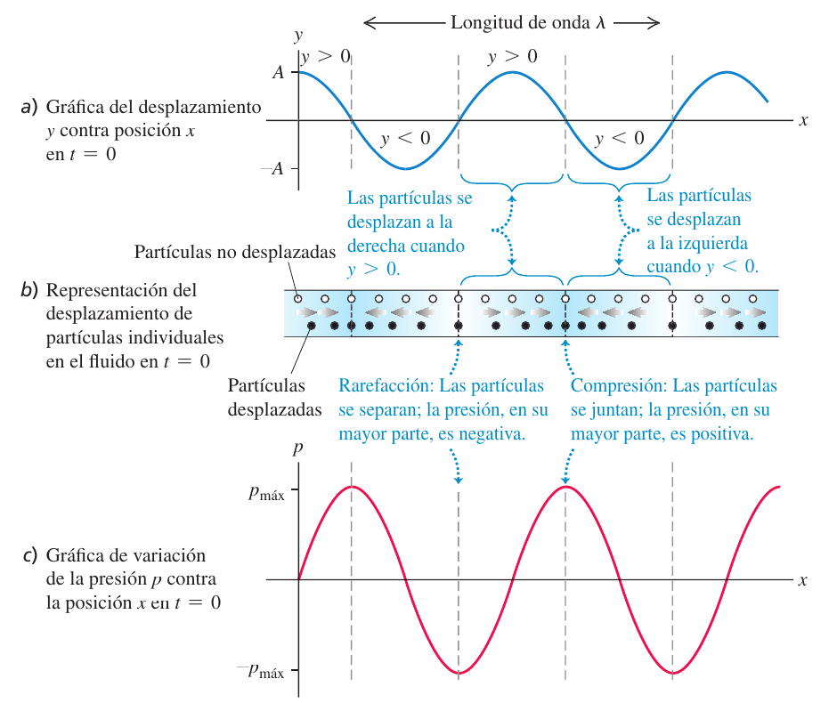
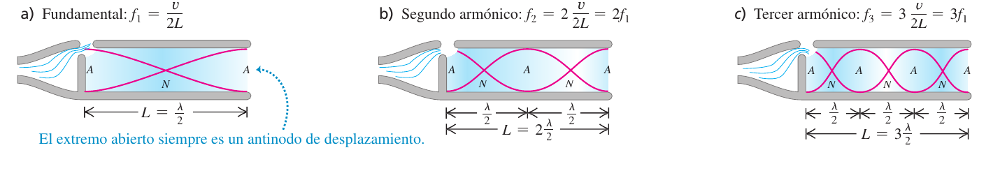
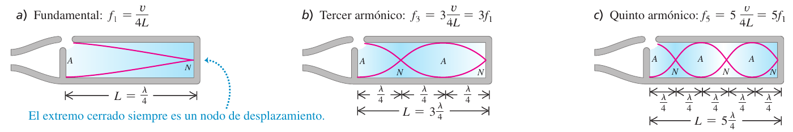
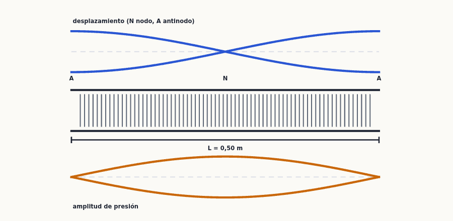
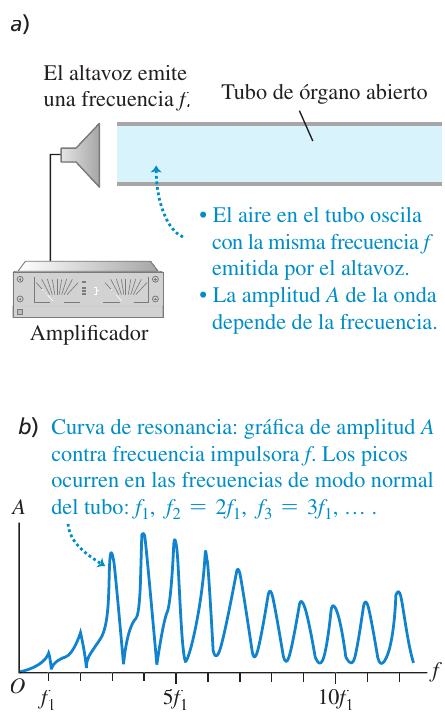
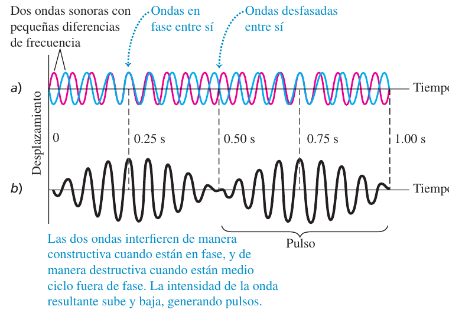
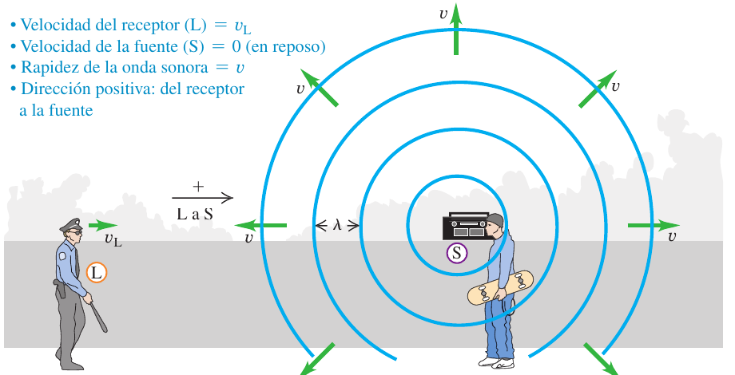
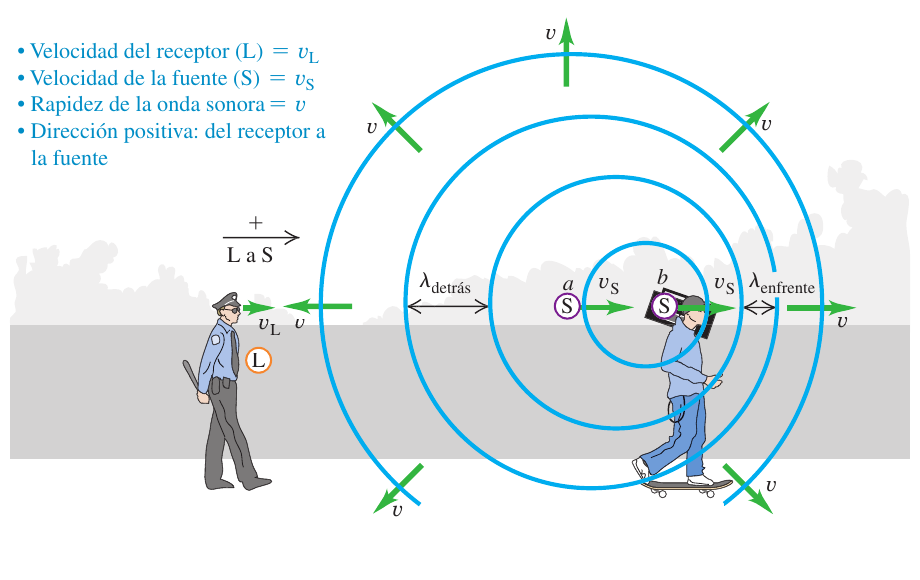
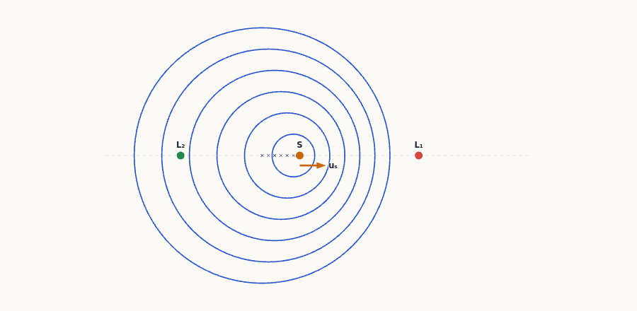
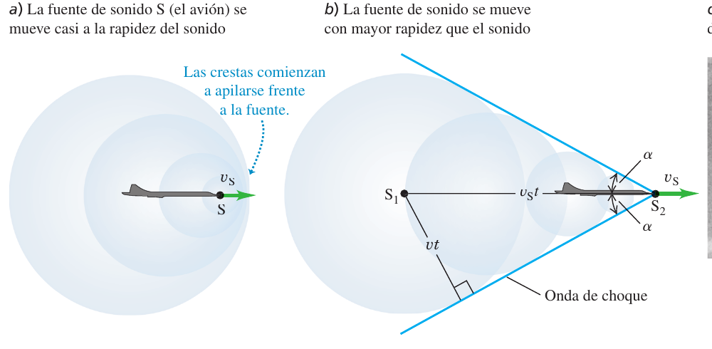

Sonido y oído
El sonido es una onda mecánica longitudinal que viaja por el aire (o el agua, o un sólido) y que tu oído detecta como cambios de presión. Este tema te enseña a describirla con la amplitud de desplazamiento y la de presión, a calcular su rapidez y su intensidad (y a medirla en decibelios), a entender por qué un tubo de órgano o una flauta solo suena con ciertas frecuencias (ondas estacionarias y resonancia), qué pasa cuando dos sonidos se suman (interferencia y pulsos) y por qué la sirena de una ambulancia cambia de tono al pasar (efecto Doppler), hasta llegar a las ondas de choque de un avión supersónico.
0Antes de empezar U p.506
Prerrequisitos: (1) ondas mecánicas (tema 15): longitud de onda $\lambda$, frecuencia $f$, número de onda $k=2\pi/\lambda$, $\omega=2\pi f$, $v=\lambda f$, función de onda $y=A\cos(kx-\omega t)$, intensidad $I=P/\text{área}$ y ley del cuadrado inverso $I\propto1/r^2$, superposición, ondas estacionarias y modos normales de una cuerda ($f_n=nf_1$); (2) movimiento armónico simple y resonancia (tema 14); (3) módulo volumétrico $B$ y módulo de Young $Y$ (tema 11) y presión (tema 12): $B$ mide lo difícil que es comprimir un fluido; (4) logaritmos decimales: $\log10=1$, $\log(ab)=\log a+\log b$, $\log2\approx0{,}30$; (5) la temperatura absoluta en kelvin, $T=T_C+273{,}15$ (el cociente de capacidades caloríficas $\gamma$ se estudia en el tema 19: aquí solo es un número que te dan).
Mapa del tema (sigue el orden de U): 16.1 el sonido como onda de desplazamiento y de presión; 16.2 rapidez del sonido ($v=\sqrt{B/\rho}$, $v=\sqrt{\gamma RT/M}$); 16.3 intensidad y decibelios; 16.4 ondas estacionarias en tubos abiertos y cerrados; 16.5 resonancia; 16.6 interferencia de dos fuentes; 16.7 pulsos; 16.8 efecto Doppler; 16.9 ondas de choque.
En las convocatorias que tenemos (2018-2025) no hay ningún problema ni ninguna pregunta de teoría de sonido, decibelios, tubos sonoros ni efecto Doppler: el índice examenes_por_tema.md marca el tema 16 como «ningún ejercicio de examen encontrado» y tampoco aparece en los exámenes revisados. Por eso este resumen no incluye ningún ejercicio de examen real y no simula ninguno. Eso no significa que no pueda caer: el examen tiene una pregunta de teoría de 4 puntos (con dos cuestiones cortas) y el tema 16 es un candidato natural. Para entrenar ese formato hay una pregunta de teoría propia («Efecto Doppler para el sonido») y dos cuestiones cortas propias, claramente marcadas como no de examen (apartado 10.1); los ejercicios numéricos son los del solucionario (E), traducidos y ampliados, ordenados por secciones (apartado 10.2).
| Convocatoria y pregunta | Tema a desarrollar | Dónde en este resumen |
|---|---|---|
| (ninguna en 2018-2025) | — | Teoría propia T1 y cuestiones C1, C2 (§10.1); problemas E (§10.2) |
- Distingue qué magnitud te dan. Desplazamiento de las partículas ($A$, en m: diminuto), variación de presión ($p_\text{máx}$, en Pa), intensidad ($I$, en W/m²) o nivel de intensidad ($\beta$, en dB). Se pasa de una a otra con $p_\text{máx}=BkA$ (16.5), $I=p_\text{máx}^2/2\rho v$ (16.14) y $\beta=(10\ \text{dB})\log(I/I_0)$ (16.15).
- La rapidez $v$ la fija el medio, no la fuente: $v=\sqrt{B/\rho}$ en un fluido y $v=\sqrt{\gamma RT/M}$ en un gas ideal ($T$ en kelvin). Con $v$ y $f$ sale $\lambda=v/f$. Al pasar de un medio a otro se conserva $f$ y cambian $v$ y $\lambda$.
- Decibelios: pasa a intensidades, opera (sumas para fuentes independientes, cuadrado inverso para la distancia) y vuelve a dB. +10 dB $\Rightarrow$ $I\times10$; +3 dB $\Rightarrow$ $I\times2$; duplicar la distancia $\Rightarrow$ −6 dB.
- Tubos: dibuja nodos (N) y antinodos (A) de desplazamiento: extremo abierto = A, extremo cerrado = N. Entre N y A hay $\lambda/4$. Abierto: $L=n\lambda/2$ ($n=1,2,3,\dots$); cerrado: $L=n\lambda/4$ ($n=1,3,5,\dots$). Después $f=v/\lambda$.
- Interferencia (fuentes en fase): calcula la diferencia de trayectorias $\Delta$: constructiva si $\Delta=n\lambda$; destructiva si $\Delta=(n+\tfrac12)\lambda$. Fuentes coherentes: se suman amplitudes; independientes: se suman intensidades.
- Doppler: dibuja $L$ y $S$, pon el sentido «+» de $L$ a $S$ y da a $v_L$ y $v_S$ el signo que les toque; $f_L=\dfrac{v+v_L}{v+v_S}f_S$ (16.29). Si hay reflexión, dos pasos. Todas las velocidades, respecto al aire.
- Supersónico: $\sin\alpha=v/v_S=1/\text{Mach}$ (16.31).
1Ondas sonoras U p.506-510
Cuando hablas, tus cuerdas vocales empujan el aire: lo comprimen un instante y lo dejan expandirse al siguiente. Esas «zonas apretadas» y «zonas sueltas» se alejan de ti como una ola que se propaga, pero las moléculas de aire no viajan con ella: cada una solo oscila un poquito hacia delante y hacia atrás alrededor de su sitio, y empuja a la siguiente (como una ola en un estadio: la ola recorre las gradas aunque cada espectador solo se levanta y se sienta en su sitio; o como una fila de fichas de dominó que caen una tras otra). El sonido es, pues, una onda longitudinal (el desplazamiento es paralelo a la dirección de propagación) y se puede contar de dos maneras equivalentes: cuánto se mueven las partículas o cuánto cambia la presión. El oído mide lo segundo.
Una onda sonora sinusoidal que viaja en la dirección $+x$ se describe con el desplazamiento $y(x,t)$ de las partículas del medio respecto a su equilibrio, medido a lo largo de $x$: $$y(x,t)=A\cos(kx-\omega t)\qquad(16.1)$$ con la amplitud de desplazamiento $A$, $k=2\pi/\lambda$ y $\omega=vk=2\pi f$. La variación de presión $p(x,t)$ es lo que la presión difiere de la atmosférica (como una presión manométrica: puede ser positiva o negativa). Se obtiene del módulo volumétrico $B$ del medio (tema 11): $$p(x,t)=-B\,\frac{\partial y(x,t)}{\partial x}\quad(16.3)\qquad\Rightarrow\qquad p(x,t)=BkA\sin(kx-\omega t)\quad(16.4)$$ La amplitud de presión es el valor máximo de $|p|$: $$\boxed{p_\text{máx}=BkA}\qquad(16.5)$$
U p.506-507La presión cambia cuando el fluido se comprime o se estira, y eso depende de cómo cambia el desplazamiento de un punto al siguiente, no del desplazamiento mismo (figura de arriba): si el extremo derecho de un trozo de fluido se desplaza más que el izquierdo ($\partial y/\partial x>0$), el trozo se estira, su volumen crece y la presión baja ($p<0$). Si todo el trozo se desplaza igual ($\partial y/\partial x=0$), solo se traslada, sin cambiar de volumen ni de presión. Por eso $y$ y $p$ están desfasadas un cuarto de ciclo ($90^\circ$): el desplazamiento es máximo donde la variación de presión es cero, y viceversa. Las compresiones (presión máxima) y las rarefacciones (presión mínima) están justo donde el desplazamiento es cero.
U p.506-507
(1) Para una misma amplitud de desplazamiento $A$, las ondas de longitud de onda más corta (agudas, $k$ grande) tienen mayor amplitud de presión: los máximos y mínimos están más juntos. (2) Un medio con $B$ grande (poco compresible) exige más presión para el mismo $A$. (3) Con la misma $p_\text{máx}$, un sonido grave tiene mucho más desplazamiento que uno agudo: $A=p_\text{máx}/Bk\propto1/f$. Por eso suele ser más cómodo describir el sonido con la presión.
U p.507En una onda sonora de intensidad moderada, las variaciones máximas de presión son de $3{,}0\times10^{-2}$ Pa. Calcula el desplazamiento máximo si $f=1000$ Hz. En el aire: $v=344$ m/s y $B=1{,}42\times10^5$ Pa.
- Idea. Dos descripciones de la misma onda: se pasa de presión a desplazamiento con (16.5), $A=p_\text{máx}/Bk$.
- $k=\dfrac\omega v=\dfrac{2\pi f}v=\dfrac{(2\pi\ \text{rad})(1000\ \text{Hz})}{344\ \text{m/s}}=18{,}3\ \text{rad/m}$.
- $A=\dfrac{p_\text{máx}}{Bk}=\dfrac{3{,}0\times10^{-2}\ \text{Pa}}{(1{,}42\times10^5\ \text{Pa})(18{,}3\ \text{rad/m})}=\mathbf{1{,}2\times10^{-8}\ m}$.
- Evaluar. ¡Una centésima del tamaño de una célula! El oído detecta presiones, no estos minúsculos desplazamientos.
Con el sonido del ejemplo 16.1, el tímpano (área $43$ mm²) mueve los huesecillos, que empujan el fluido del oído interno a través del estribo (área $3{,}2$ mm²). Calcula a) la amplitud de presión y b) la amplitud de desplazamiento en el fluido, donde $v=1500$ m/s y $B=2{,}18\times10^9$ Pa.
- a) Se desprecia la masa de los huesecillos, así que la fuerza es la misma en ambos lados: $F_\text{máx}=p_\text{máx}(\text{aire})\,S_\text{tímpano}=p_\text{máx}(\text{oído interno})\,S_\text{estribo}$. Luego $p_\text{máx}(\text{oído interno})=(3{,}0\times10^{-2}\ \text{Pa})\dfrac{43}{3{,}2}=\mathbf{0{,}40\ Pa}$ (factor 13).
- b) La frecuencia angular es la misma (todo oscila junto), pero la onda va a 1500 m/s: $k=\dfrac{2\pi f}v=\dfrac{2\pi(1000)}{1500}=4{,}2$ rad/m. Entonces $A=\dfrac{p_\text{máx}}{Bk}=\dfrac{0{,}40}{(2{,}18\times10^9)(4{,}2)}=\mathbf{4{,}4\times10^{-11}\ m}$.
- Evaluar. El desplazamiento es aún menor que en el aire, pero lo que excita las células pilosas es la presión, que ha crecido 13 veces: parte de la gran sensibilidad del oído.
Las magnitudes físicas se ligan a lo que oímos: el tono (agudo o grave) lo fija sobre todo la frecuencia; el volumen, sobre todo la amplitud de presión (pero el oído no es igual de sensible a todas las frecuencias: a 1000 Hz el mínimo audible es $p_\text{máx}\approx3\times10^{-5}$ Pa, y a 200 Hz o 15 000 Hz hace falta unas diez veces más); el timbre (lo que distingue un clarinete de una flauta con la misma nota) depende de qué armónicos acompañan a la fundamental: un sonido rico en armónicos suena «delgado» y uno con casi solo fundamental, «suave». El ruido, en cambio, mezcla todas las frecuencias, no solo múltiplos enteros de una fundamental.
U p.509-510Creer que el aire «viaja» con el sonido (hay oscilación local, no corriente), o que el máximo de presión coincide con el máximo de desplazamiento (están a un cuarto de ciclo, $90^\circ$). Y, en cuentas: olvidar que en $p_\text{máx}=BkA$ el número de onda es $k=2\pi/\lambda$ (no $f/v$) y pasar $A$ a metros.
Se aumenta la frecuencia de 100 a 400 Hz manteniendo constante la amplitud de presión. ¿Qué pasa con la amplitud de desplazamiento? v. Se reduce a la cuarta parte: $A=p_\text{máx}/(Bk)$ y $k=2\pi f/v$ se multiplica por 4, luego $A$ se divide por 4.
U p.510, 5442Rapidez de las ondas sonoras U p.510-513
Todas las ondas mecánicas siguen la misma receta: la rapidez es la raíz de «fuerza que devuelve al equilibrio dividida por inercia». En una cuerda eran la tensión $F$ y la masa por unidad de longitud $\mu$: $v=\sqrt{F/\mu}$. Para el sonido, lo que devuelve al equilibrio es la resistencia del fluido a comprimirse, el módulo volumétrico $B$; y la inercia es la densidad $\rho$. Manda el cociente rigidez/densidad: el acero es denso pero muchísimo más rígido, así que el sonido va deprisa; el aire es ligerísimo pero muy compresible ($B$ pequeño), así que va despacio; el helio, de compresibilidad parecida a la del aire, es unas 7 veces más ligero y por eso el sonido va más deprisa en él.
En un fluido (gas o líquido) y en un sólido en barra delgada: $$v=\sqrt{\frac B\rho}\quad(16.7,\ \text{fluido})\qquad\qquad v=\sqrt{\frac Y\rho}\quad(16.8,\ \text{varilla sólida})$$ con $B$ el módulo volumétrico, $Y$ el módulo de Young y $\rho$ la densidad. (16.7) se deduce con el teorema impulso-cantidad de movimiento sobre un pistón que empuja el fluido en un tubo. (16.8) solo vale para varillas cuyos lados pueden ensancharse libremente; en un sólido voluminoso la rapidez depende también del módulo de corte.
U p.510-511- Montaje. Un pistón empuja con rapidez constante $v_y$ un fluido en reposo (densidad $\rho$, presión $p$) dentro de un tubo de sección $A$. La perturbación avanza con rapidez $v$: en un tiempo $t$ está en movimiento el fluido que ocupaba una longitud $vt$, es decir, volumen $vtA$ y masa $\rho vtA$.
- Cantidad de movimiento. Partía del reposo, así que ahora vale $(\rho vtA)\,v_y$.
- Sobrepresión. El pistón ha avanzado $v_yt$, de modo que el volumen $vtA$ ha disminuido en $Av_yt$: $\Delta V/V=-v_y/v$. Con $B=-\Delta p/(\Delta V/V)$ resulta $\Delta p=B\,v_y/v$.
- Impulso. La presión $p$ actúa a ambos lados del fluido en movimiento; la fuerza neta es $\Delta p\,A$ y el impulso, $\Delta p\,At=B\dfrac{v_y}{v}At$.
- Teorema impulso-cantidad de movimiento (16.6): $B\dfrac{v_y}{v}At=\rho vtA\,v_y\ \Rightarrow\ \dfrac Bv=\rho v\ \Rightarrow\ \boxed{v=\sqrt{\dfrac B\rho}}$ (16.7).
En un gas, $B$ depende de la presión: $B=\gamma p_0$ (16.9), con $p_0$ la presión de equilibrio y $\gamma$ el cociente de capacidades caloríficas (adimensional; $\gamma=1{,}40$ para el aire, ver cap. 19). Como $B/\rho$ no depende de la presión (solo de la temperatura), la rapidez es función de la temperatura absoluta: $$\boxed{v=\sqrt{\frac{\gamma RT}M}}\qquad(16.10)$$ con $T$ en kelvin, $R=8{,}314$ J/(mol·K) y $M$ la masa molar en kg/mol. Para un gas dado, $v\propto\sqrt T$; a igual $T$, $v\propto\sqrt{\gamma/M}$ (más ligero ⇒ más rápido). A $20$ °C en el aire, $v=344$ m/s.
U p.512-513Un sonar emite 262 Hz bajo el agua. Calcula la rapidez en el agua con (16.7) y la longitud de onda. Densidad del agua $\rho=1{,}00\times10^3$ kg/m³; módulo volumétrico $B=2{,}18\times10^9$ Pa (ejemplo 16.2).
- $v=\sqrt{B/\rho}=\sqrt{\dfrac{2{,}18\times10^9}{1{,}00\times10^3}}=\mathbf{1480\ m/s}$ (coincide con la tabla 16.1).
- $\lambda=\dfrac vf=\dfrac{1480}{262}=\mathbf{5{,}65\ m}$.
- Evaluar. El agua es más densa, pero es mucho más incompresible ($B$ enorme): gana $B$ y $v$ es mayor que en el aire. En el aire, 262 Hz tiene $\lambda=1{,}31$ m: a igual frecuencia, más longitud de onda en el agua.
Calcula la rapidez del sonido en el aire a $20$ °C ($M=28{,}8\times10^{-3}$ kg/mol, $\gamma=1{,}40$) y el intervalo de longitudes de onda a las que es sensible el oído (20 Hz a 20 000 Hz).
- Kelvin y kg/mol. $T=20+273=293$ K. $v=\sqrt{\dfrac{\gamma RT}M}=\sqrt{\dfrac{(1{,}40)(8{,}314)(293)}{28{,}8\times10^{-3}}}=\mathbf{344\ m/s}$.
- $\lambda=v/f$: a 20 Hz, $\lambda=\mathbf{17\ m}$; a 20 000 Hz, $\lambda=\mathbf{1{,}7\ cm}$.
- Evaluar. Coincide con la rapidez medida a 20 °C. Un bajo audible tiene casi el tamaño de una casa; el agudo más alto, el de una uña.
¿Por qué el sonido de un cuerno viaja más despacio en un frío día de invierno en las montañas que en un cálido día de verano a nivel del mar? ¿Por la presión, la densidad, la humedad, la temperatura o la masa por mol? La temperatura: de (16.10), $v\propto\sqrt T$; la composición del aire es esencialmente la misma, así que el aire frío transmite el sonido más despacio.
U p.505, 544Poner la temperatura en °C o la masa molar en g/mol en (16.10): el resultado sale mal por un factor enorme (la masa molar en g/mol da un error de $\sqrt{1000}\approx32$). Y usar (16.8) en un sólido voluminoso, o (16.7) en una varilla: en una varilla manda $Y$, no $B$.
El mercurio es 13,6 veces más denso que el agua. De acuerdo con la tabla 16.1, a 20 °C, ¿qué líquido tiene mayor módulo volumétrico? i. El mercurio. De (16.7), $B=\rho v^2$: el mercurio tiene $\rho$ 13,6 veces mayor y una rapidez casi igual (1451 frente a 1482 m/s), así que su $B$ es unas 13 veces el del agua.
U p.513, 5443Intensidad del sonido y decibelios U p.514-518
La intensidad $I$ es la «cantidad de sonido por metro cuadrado»: la potencia que atraviesa cada m² perpendicular a la propagación (W/m²). Es lo que hace que un altavoz te parezca fuerte o débil. Pero el oído es peculiar: percibe desde $10^{-12}$ W/m² (el susurro más débil) hasta $1$ W/m² (donde empieza a doler), un rango de un billón de veces. Para no manejar tantos ceros se usa una escala logarítmica: el nivel de intensidad en decibelios. Cada vez que $I$ se multiplica por 10, el nivel sube 10 dB (como la escala Richter con los terremotos).
La potencia por unidad de área es $p(x,t)\,v_y(x,t)$ (fuerza por área por velocidad de las partículas). Promediando $\sin^2$ (valor medio $\tfrac12$) se obtiene $$I=\tfrac12 B\omega kA^2\quad(16.11)\qquad I=\tfrac12\sqrt{\rho B}\,\omega^2A^2\quad(16.12)$$ y, en términos de la amplitud de presión (más cómoda), $$\boxed{I=\frac{p_\text{máx}^2}{2\rho v}=\frac{p_\text{máx}^2}{2\sqrt{\rho B}}}\qquad(16.14)$$ A igual intensidad, ondas de distinta frecuencia tienen distinta $A$ pero la misma $p_\text{máx}$. Si la fuente emite igual en todas direcciones, $I=P/4\pi r^2$ (ley del cuadrado inverso, 15.26); en interiores no vale, por las reflexiones.
U p.514-515Calcula la intensidad de la onda del ejemplo 16.1, $p_\text{máx}=3{,}0\times10^{-2}$ Pa, a $20$ °C ($\rho=1{,}20$ kg/m³, $v=344$ m/s).
- $I=\dfrac{p_\text{máx}^2}{2\rho v}=\dfrac{(3{,}0\times10^{-2})^2}{2(1{,}20)(344)}=\mathbf{1{,}1\times10^{-6}\ W/m^2}$.
- Evaluar. Parece poco, pero está en el rango cotidiano. El umbral de dolor ($p_\text{máx}\approx30$ Pa) corresponde a $I\approx1$ W/m²; el sonido más tenue audible ($p_\text{máx}\approx3\times10^{-5}$ Pa), a $10^{-12}$ W/m².
¿Qué amplitudes de desplazamiento y de presión tiene una onda de 20 Hz con la misma intensidad que la de 1000 Hz de los ejemplos 16.1 y 16.5?
- De (16.14) y (16.12): $p_\text{máx}^2=2I\sqrt{\rho B}$ y $\omega^2A^2=2I/\sqrt{\rho B}$. Con $\rho$, $B$, $I$ fijos, $p_\text{máx}$ es la misma ($3{,}0\times10^{-2}$ Pa) y $fA$ es constante.
- $A_{20}=\dfrac{f_{1000}}{f_{20}}A_{1000}=\dfrac{1000}{20}(1{,}2\times10^{-8})=6{,}0\times10^{-7}$ m $=\mathbf{0{,}60\ mm}$.
- Evaluar. Refuerza la idea de que la presión es la descripción más conveniente: no depende de la frecuencia a igual intensidad.
En un concierto al aire libre se quiere $I=1$ W/m² a 20 m de los altavoces, que emiten igual en todas direcciones sobre el suelo. ¿Qué potencia acústica media deben tener?
- La potencia se reparte sobre un hemisferio de radio 20 m (el suelo no radia): área $=\tfrac12(4\pi)(20)^2\approx2500$ m².
- $P=IA=(1\ \text{W/m}^2)(2500\ \text{m}^2)=\mathbf{2500\ W=2{,}5\ kW}$.
- Evaluar. La potencia eléctrica necesaria sería mucho mayor: los altavoces rinden solo un pequeño porcentaje.
$$\boxed{\beta=(10\ \text{dB})\log\frac I{I_0}}\qquad(16.15)\qquad I_0=10^{-12}\ \text{W/m}^2$$ ($\log$ es el logaritmo en base 10; $I_0$ es aproximadamente el umbral de audición a 1000 Hz). Si $I=I_0$, $\beta=0$ dB; si $I=1$ W/m², $\beta=120$ dB. Despejando: $I=I_0\,10^{\beta/(10\ \text{dB})}$. Para dos niveles, $I_0$ se cancela: $$\beta_2-\beta_1=(10\ \text{dB})\log\frac{I_2}{I_1}\qquad(\text{ejemplo 16.9})$$ La percepción de volumen no es proporcional a $I$: un aumento de unos 8 a 10 dB (intensidad ×6 a ×10) se percibe como el doble de volumen.
U p.516-518Una exposición de 10 min a 120 dB desplaza el umbral del oído de 0 dB a 28 dB; 10 años a 92 dB lo desplazan de forma permanente a 28 dB. ¿Qué intensidades son 28 y 92 dB?
- Despeja $I$ de (16.15): $I=I_0\,10^{\beta/(10\ \text{dB})}$.
- $I_{28}=(10^{-12})\,10^{2{,}8}=\mathbf{6{,}3\times10^{-10}\ W/m^2}$; $I_{92}=(10^{-12})\,10^{9{,}2}=\mathbf{1{,}6\times10^{-3}\ W/m^2}$.
- Cuidado. Si te sale un factor 10 de más, has tecleado $10\times10^{-12}$ en vez de $1\times10^{-12}$.
Un pájaro (fuente puntual de potencia constante) cumple la ley del cuadrado inverso. ¿Cuántos decibelios baja el nivel si te alejas al doble de la distancia?
- $\beta_2-\beta_1=(10\ \text{dB})\log(I_2/I_1)$ y, por (15.26), $I_2/I_1=r_1^2/r_2^2=\tfrac14$.
- $\beta_2-\beta_1=(10\ \text{dB})\log\tfrac14=\mathbf{-6{,}0\ dB}$.
- Evaluar. El resultado es negativo (más lejos ⇒ más débil) y no depende del nivel inicial: cada vez que se duplica la distancia a una fuente puntual, el nivel baja 6 dB.
Identificar: ¿qué es la incógnita ($A$, $p_\text{máx}$, $I$, $\beta$, $f$…)? Plantear: ordena las cantidades (de la onda: $A$, $p_\text{máx}$, $f$, $\lambda$, $k$; del medio: $v$, y $B$ y $\rho$ en un líquido o $\gamma$, $T$ y $M$ en un gas). Ejecutar: $T$ en kelvin. Evaluar: busca una relación alternativa. Truco: memoriza tres saltos, $\times2\leftrightarrow+3$ dB, $\times10\leftrightarrow+10$ dB, y que $N$ fuentes iguales e independientes suman $10\log N$ dB; el resto, con la calculadora y (16.15).
U p.515(1) Sumar decibelios: dos máquinas de 60 dB no dan 120 dB, sino 63 dB (se suman las intensidades y luego se pasa a dB). (2) Pensar que el nivel en dB cumple el inverso del cuadrado: es la intensidad la que lo cumple. (3) Olvidar el 10 delante del $\log$ (con el bel serían 1).
Se duplica la intensidad sin cambiar la frecuencia (ni la presión, densidad y temperatura del aire). La amplitud de desplazamiento y la de presión se multiplican por $\sqrt2$ (de (16.12) y (16.14), $I\propto A^2$ y $I\propto p_\text{máx}^2$); el módulo volumétrico y la rapidez del sonido no cambian (son del medio); el nivel de intensidad sube $(10\ \text{dB})\log2=3{,}0$ dB.
U p.518, 5444Ondas sonoras estacionarias y modos normales U p.518-522
Una onda sonora que viaja por un tubo se refleja en los extremos, igual que una onda en una cuerda, y la ida y la vuelta se superponen formando una onda estacionaria (tema 15). Así suena una flauta, un órgano o tu propia voz (el tracto vocal es un tubo): el tubo «elige» solo las frecuencias para las que la onda encaja entre sus extremos, como una cuerda de guitarra solo vibra en sus modos normales. Lo nuevo respecto a la cuerda es que aquí hay dos formas de mirar la misma onda estacionaria (desplazamiento y presión), y sus nodos y antinodos están intercambiados.
Un nodo de desplazamiento (N) es un punto donde las partículas no se mueven; un antinodo de desplazamiento (A), donde oscilan con amplitud máxima. En un nodo de desplazamiento el gas se comprime y expande al máximo, así que allí la presión varía al máximo: es un antinodo de presión. Al revés, en un antinodo de desplazamiento la presión no varía: es un nodo de presión. $$\boxed{\text{nodo de presión}=\text{antinodo de desplazamiento}\qquad\text{antinodo de presión}=\text{nodo de desplazamiento}}$$ Extremo cerrado (tapón rígido): las partículas no pueden moverse ⇒ nodo de desplazamiento (antinodo de presión), como el extremo fijo de una cuerda. Extremo abierto: está a la presión atmosférica, que no varía ⇒ nodo de presión = antinodo de desplazamiento, como el extremo libre de una cuerda (en rigor el nodo de presión está un poco más allá del extremo, pero se desprecia si el tubo es estrecho respecto a $\lambda$). Distancias: nodo–antinodo contiguos, $\lambda/4$; nodo–nodo o antinodo–antinodo, $\lambda/2$.
U p.518-519Un tubo de vidrio de unos 1 m, cerrado en un extremo y con un diafragma que vibra (movido por un altavoz) en el otro, lleva polvo fino en el fondo. Al variar la frecuencia se pasa por valores en los que la onda estacionaria es tan intensa que el polvo es barrido por el gas allí donde este se mueve y se acumula en los nodos de desplazamiento, donde el gas está quieto. Nodos contiguos distan $\lambda/2$; si $d$ es esa distancia entre montoncitos de polvo, $\lambda=2d$ y $$v=\lambda f=2\,d\,f$$ Por ejemplo, con $f=1000$ Hz y $d=17{,}2$ cm: $v=2(0{,}172)(1000)=344$ m/s. Es un método para medir la rapidez del sonido en un gas.
U p.518Un altavoz direccional dirige una onda de longitud $\lambda$ hacia una pared. ¿A qué distancias de la pared no oirías nada?
- El oído detecta variaciones de presión: no oirás nada en un nodo de presión, que es un antinodo de desplazamiento.
- La pared es nodo de desplazamiento; el primer antinodo está a $\lambda/4$ y los siguientes a $\lambda/2$ más cada vez: $d=\mathbf{\lambda/4,\ 3\lambda/4,\ 5\lambda/4,\dots}$
- Si el altavoz no es perfectamente direccional, el efecto se nota poco por las reflexiones en suelo, techo y otras paredes.
Antinodo de desplazamiento en cada extremo: la distancia entre antinodos contiguos es $\lambda/2$, así que $L$ debe ser un número entero de semilongitudes de onda: $$\boxed{\lambda_n=\frac{2L}n,\qquad f_n=\frac{nv}{2L}=nf_1,\qquad f_1=\frac v{2L}\qquad(n=1,2,3,\dots)}\qquad(16.16\text{-}16.19)$$ Están todos los armónicos ($f_2=2f_1$, $f_3=3f_1$, …). El 2.º armónico es el 1.er sobretono.
U p.520
Antinodo de desplazamiento en la boca y nodo en el fondo: de un nodo a un antinodo hay $\lambda/4$, así que $L$ es un número impar de cuartos de onda: $$\boxed{\lambda_n=\frac{4L}n,\qquad f_n=\frac{nv}{4L}=nf_1,\qquad f_1=\frac v{4L}\qquad(n=1,3,5,\dots)}\qquad(16.20\text{-}16.23)$$ Faltan los armónicos pares: solo $f_1,3f_1,5f_1,\dots$ Para la misma $L$, el cerrado tiene la mitad de frecuencia fundamental que el abierto (una octava más grave). Un tubo cerrado por ambos lados no sirve de instrumento: el sonido no sale.
U p.521

Un día en que $v=345$ m/s, la fundamental de un tubo de órgano cerrado es 220 Hz. a) ¿Qué longitud tiene? b) Su segundo sobretono tiene la misma longitud de onda que el tercer armónico de un tubo abierto. ¿Qué longitud tiene el abierto?
- a) Cerrado: $f_1=v/4L$ ⇒ $L_\text{cerrado}=\dfrac v{4f_1}=\dfrac{345}{4(220)}=\mathbf{0{,}392\ m}$.
- b) En un cerrado, el segundo sobretono es el quinto armónico ($n=5$: los impares son 1, 3, 5…): $f_5=5(220)=1100$ Hz. Igual $\lambda$ ⇒ igual $f$: el tercer armónico del abierto vale $3\dfrac{v}{2L_\text{abierto}}=1100$ Hz ⇒ $L_\text{abierto}=\dfrac{3(345)}{2(1100)}=\mathbf{0{,}470\ m}$.
- Evaluar. El abierto es más largo pero su fundamental es más alta, $1100/3=367$ Hz, no hay contradicción: compara las figuras 16.17a y 16.18a.
En un tubo real suenan varios modos a la vez; la onda estacionaria compleja emite al aire una onda con un contenido armónico parecido (un tubo muy estrecho: muchos armónicos altos; uno más ancho: sobre todo la fundamental, sonido «de flauta»). Una flauta se comporta como un tubo abierto; un clarinete, como uno cerrado (cerrado en la lengüeta). Los orificios cambian la longitud efectiva $L$. Como $f\propto v$ y $v\propto\sqrt T$ (16.10), el tono de los instrumentos de viento sube con la temperatura, y un órgano con tubos a distinta temperatura suena desafinado.
U p.522(1) Poner un nodo de desplazamiento en el extremo abierto: es nodo de presión, antinodo de desplazamiento. (2) Intercambiar $2L$ y $4L$. (3) Creer que el tubo cerrado tiene todos los armónicos (solo impares) o que $\lambda_n$ depende del gas: $\lambda_n$ solo depende de $L$; el gas fija $v$ y por tanto $f=v/\lambda$. (4) Llamar «segundo sobretono» al armónico $n=2$ (es el $n=3$ en un abierto, y el $n=5$ en un cerrado).
Se inyecta helio a la misma presión y temperatura en lugar de aire en un tubo metálico. ¿Cambia el tono? ii. Un tono más alto. La longitud de onda en el tubo depende solo de su forma ($\lambda_n=2L/n$ o $4L/n$), pero $v$ es mayor en el helio (menor masa molar, 16.10) y $f=v/\lambda$ sube.
U p.522, 5445Resonancia y sonido U p.522-524
Empujar un columpio justo al ritmo de su balanceo hace que suba cada vez más; empujarlo a otro ritmo apenas lo mueve. Eso es la resonancia (tema 14). Un tubo de órgano o una cuerda tienen muchos «ritmos propios» (sus modos normales): si les aplicas una fuerza periódica cuya frecuencia impulsora coincide con uno de ellos, responden con una amplitud enorme. Así, el aire de una botella al soplar sobre su boca «elige» y amplifica una de sus frecuencias entre todas las que lleva el soplo; el «sonido del océano» en un caracol es el aire del caracol resonando con el ruido del exterior; y una cantante puede romper una copa si canta exactamente en una de sus frecuencias propias.
Si se fuerza un sistema a oscilar con la frecuencia $f$ de una fuerza impulsora, la amplitud de la oscilación forzada es pequeña salvo cuando $f$ es (casi) igual a una frecuencia de modo normal: entonces el sistema está en resonancia y la amplitud es máxima. La gráfica amplitud-frecuencia (curva de resonancia) tiene picos en $f_1, f_2=2f_1, f_3=3f_1,\dots$ de un tubo abierto. Sin rozamiento los picos serían infinitos; en un sistema real hay amortiguamiento (tema 14) y son finitos. Ejemplo biológico: el canal auditivo es un tubo de unos 2,5 cm cerrado por el tímpano, con $f_1=v/4L=(344)/[4(0{,}025)]=3440$ Hz, y por eso el oído es más sensible cerca de esa frecuencia.
U p.522-523
Un tubo cerrado de órgano suena junto a una guitarra y hace vibrar una cuerda con gran amplitud al ajustar su tensión. La cuerda mide el 80 % del tubo y ambos vibran en su fundamental. Calcula $v_\text{cuerda}/v_\text{aire}$.
- Idea. La gran respuesta es resonancia: tubo y cuerda tienen la misma frecuencia fundamental, $f_{1a}=f_{1s}$.
- Tubo cerrado (16.20): $f_{1a}=v_a/4L_a$. Cuerda fija en los dos extremos (15.32): $f_{1s}=v_s/2L_s$. Igualando, $\dfrac{v_a}{4L_a}=\dfrac{v_s}{2L_s}$ con $L_s=0{,}80L_a$ ⇒ $\dfrac{v_s}{v_a}=\dfrac{2L_s}{4L_a}=\dfrac{2(0{,}80)}{4}=\mathbf{0{,}40}$.
- Evaluar. Con $v_a=345$ m/s, $v_s=138$ m/s. Misma frecuencia, distinta $\lambda=v/f$ en cada medio: la onda estacionaria del tubo tiene mayor longitud de onda.
Decir que en resonancia coinciden las longitudes de onda: coinciden las frecuencias; al pasar de la cuerda al aire (o del tubo a la cuerda) cambia la rapidez y, con ella, $\lambda=v/f$.
Un tubo cerrado de longitud $L$ tiene $f_1=220$ Hz. ¿En qué tubos habrá resonancia con un diapasón de 660 Hz? i y iv. (i) Cerrado de longitud $L$: $660=3f_1$, tercer armónico (impar) ✓. (ii) Cerrado de $2L$: $f_1=110$ Hz, $660=6f_1$ (par, no existe) ✗. (iii) Abierto de $L$: $f_1=440$ Hz, sus armónicos son 440, 880…: 660 no está ✗. (iv) Abierto de $2L$: $f_1=220$ Hz, $660=3f_1$ ✓.
U p.524, 5446Interferencia de ondas U p.524-526
Dos altavoces conectados al mismo amplificador emiten la misma onda a la vez. En un punto cualquiera llegan las dos: si las crestas coinciden se refuerzan (suenan más fuerte); si una cresta coincide con un valle se cancelan (casi silencio). Lo que decide una cosa u otra es cuánto más camino ha recorrido una onda que la otra. Los auriculares con cancelación de ruido usan este truco: un micrófono capta el ruido exterior y el circuito lo reproduce con medio ciclo de desfase para anularlo.
Dos fuentes que emiten en fase ondas de la misma frecuencia. Sea $\Delta$ la diferencia de trayectorias (distancia a una fuente menos distancia a la otra): $$\Delta=0,\ \lambda,\ 2\lambda,\dots\ \Rightarrow\ \textbf{constructiva}\qquad\Delta=\tfrac\lambda2,\ \tfrac{3\lambda}2,\ \tfrac{5\lambda}2,\dots\ \Rightarrow\ \textbf{destructiva}$$ En la constructiva la amplitud total es la suma de las dos (el doble si son iguales); en la destructiva es la diferencia (cero si son iguales). La fase relativa en el punto es $\Delta\phi=2\pi\Delta/\lambda$: un $\lambda$ de camino añade $2\pi$ de fase.
U p.524-525La onda total de dos altavoces sigue siendo viajera: transporta energía de los altavoces al aire. La interferencia solo la canaliza hacia ciertas direcciones (constructiva) y la aleja de otras (destructiva). Un punto de interferencia destructiva es nodo de desplazamiento y de presión a la vez (no hay onda) si las amplitudes son iguales; si no lo son, es solo un mínimo. Es distinto de una onda estacionaria, donde un nodo de presión es antinodo de desplazamiento.
U p.524Dos altavoces pequeños A y B, alimentados por el mismo amplificador y en fase, emiten ondas sinusoidales. En P (figura) las distancias son $d_A=\sqrt{2{,}00^2+4{,}00^2}$ y $d_B=\sqrt{1{,}00^2+4{,}00^2}$ metros. a) ¿En qué frecuencias hay interferencia constructiva en P? b) ¿Y destructiva? Rapidez del sonido, 350 m/s.
- Diferencia de trayectorias: $d_A=4{,}47$ m, $d_B=4{,}12$ m ⇒ $d=0{,}35$ m. Fija: no depende de $f$.
- a) Constructiva: $d=n\lambda=nv/f$ ⇒ $f_n=n\dfrac vd=n\dfrac{350}{0{,}35}=\mathbf{1000,\ 2000,\ 3000\ Hz,\dots}$ ($n=1,2,3,\dots$).
- b) Destructiva: $d=\tfrac12\lambda,\tfrac32\lambda,\dots$ ⇒ $f_n=n\dfrac v{2d}=n\dfrac{350}{2(0{,}35)}=\mathbf{500,\ 1500,\ 2500\ Hz,\dots}$ ($n=1,3,5,\dots$).
- Evaluar. Al subir la frecuencia, el sonido en P alterna entre grande y casi cero. En una habitación ordinaria el efecto se difumina por las reflexiones.
Usar la distancia a un solo altavoz, o la separación entre altavoces, en lugar de la diferencia de trayectorias; o aplicar la condición con altavoces a distinta frecuencia (no hay interferencia estable: ver evalúe 16.6). Y sumar intensidades de fuentes coherentes (hay que sumar las amplitudes, ver el problema práctico).
El altavoz A emite 500 Hz y el B emite 1000 Hz. ¿Qué interferencia hay? iii. Ninguna de las dos. Con frecuencias distintas la diferencia de fase entre las ondas cambia constantemente con el tiempo, así que no hay puntos de reforzamiento o cancelación estables.
U p.526, 5447Pulsos U p.526-528
Si dos diapasones suenan casi a la misma frecuencia, oyes un único tono que sube y baja de volumen como un temblor: «¡wow-wow-wow!». Las dos ondas van entrando y saliendo de fase: cuando coinciden suenan fuerte; cuando están en oposición se anulan. Esos latidos se llaman pulsos, y los usa quien afina un instrumento: ajusta la cuerda hasta que los pulsos desaparecen (frecuencias iguales).
Dos ondas de la misma amplitud y frecuencias $f_a>f_b$ ligeramente distintas. En un punto fijo se describen con $y_a(t)=A\sin2\pi f_at$ e $y_b(t)=-A\sin2\pi f_bt$. Sumándolas, $y_a+y_b=\big[2A\sin\tfrac12(2\pi)(f_a-f_b)t\big]\cos\tfrac12(2\pi)(f_a+f_b)t$: un tono de frecuencia media $\tfrac12(f_a+f_b)$ cuya amplitud varía lentamente con $\tfrac12(f_a-f_b)$. Como la intensidad percibida (cuadrado de la amplitud) pasa por dos máximos y dos mínimos por ciclo de esa amplitud: $$\boxed{f_\text{pulso}=f_a-f_b}\qquad(16.24)$$ La frecuencia de los pulsos es la diferencia de frecuencias, y solo eso: no dice cuál de las dos es mayor. Se oyen pulsos hasta unos 6-7 Hz; con diferencias mayores el oído deja de percibirlos y siente consonancia o disonancia (y a veces un «tono diferencia» igual a $f_a-f_b$: 1800 y 1900 Hz dan un tono grave de 100 Hz). La forma exacta de la envolvente depende de la fase inicial de cada onda (con otras fases iniciales sería, por ejemplo, $2A|\cos\pi(f_a-f_b)t|$, como en la figura de abajo); lo que no cambia es la frecuencia de los pulsos.
U p.526-527
(1) Creer que la frecuencia de los pulsos indica cuál de las dos fuentes está más alta; solo da la diferencia (por eso el diapasón desconocido de 440 Hz con 3 pulsos por segundo puede ser 437 o 443 Hz). (2) Confundir el tono (lo fija sobre todo la frecuencia) con la sonoridad (la amplitud).
U p.527Un diapasón vibra a 440 Hz y se oyen 3 pulsos por segundo al sonar con otro. ¿Frecuencia del segundo? vi. 437 Hz o 443 Hz. $|f-440|=3$ ⇒ $f=437$ o $443$ Hz: los pulsos solo dan la diferencia.
U p.528, 5448Efecto Doppler U p.528-533
Cuando una ambulancia se acerca, la sirena suena aguda; al pasar y alejarse, cae a un tono más grave. Eso es el efecto Doppler: si la fuente o el receptor se mueven respecto al aire, la frecuencia que oyes ($f_L$, de listener) no es la que emite la fuente ($f_S$, de source). Dos imágenes cotidianas sirven para entenderlo. (1) Receptor que se mueve (tú en bici hacia una fuente quieta): las crestas están igual de separadas, pero tú las encuentras más a menudo, porque vas hacia ellas. (2) Fuente que se mueve (un camión que se acerca): cada cresta que emite sale desde un punto algo más adelantado que la anterior, así que delante del camión las crestas se amontonan (longitud de onda menor, tono agudo) y detrás se estiran (longitud de onda mayor, tono grave). Y las dos situaciones no son simétricas, porque el aire (el medio) es una referencia física.
El movimiento es a lo largo de la recta que une la fuente $S$ y el receptor $L$. Sean $v_S$ y $v_L$ las componentes de velocidad de la fuente y del receptor respecto al medio (el aire). El sentido positivo, para ambas, es el que va del receptor $L$ hacia la fuente $S$. La rapidez del sonido $v$ (respecto al aire) siempre es positiva.
U p.528La fuente quieta crea crestas separadas $\lambda=v/f_S$. Un receptor que va hacia la fuente con $v_L$ las ve acercarse con rapidez relativa $v+v_L$, así que recibe $$f_L=\frac{v+v_L}{\lambda}=\Big(1+\frac{v_L}{v}\Big)f_S\qquad(16.25),(16.26)$$ Si se acerca ($v_L>0$), $f_L>f_S$ (más agudo); si se aleja ($v_L<0$), $f_L<f_S$. $\lambda$ no cambia: cambia la rapidez con que el receptor «barre» las crestas.
U p.528-529
La rapidez de la onda respecto al aire sigue siendo $v$ (la fija el medio, no la fuente), pero $\lambda$ ya no es $v/f_S$. En un periodo $T=1/f_S$ la cresta avanza $vT$ y la fuente avanza $v_ST$. La longitud de onda es la distancia entre crestas sucesivas, distinta delante y detrás: $$\lambda_\text{enfrente}=\frac{v-v_S}{f_S}\quad(16.27)\qquad\lambda_\text{atrás}=\frac{v+v_S}{f_S}\quad(16.28)$$ (en estas dos fórmulas $v_S$ es la rapidez de la fuente). Sustituyendo (16.28) en $f_L=(v+v_L)/\lambda$ se obtiene la expresión general, válida para todas las combinaciones de movimientos a lo largo de la línea que une $S$ y $L$: $$\boxed{f_L=\frac{v+v_L}{v+v_S}\,f_S}\qquad(16.29)$$ con $v_L$ y $v_S$ positivas si van de $L$ a $S$ y negativas en caso contrario. Comprobaciones: si $v_L=v_S=0$ o $v_L=v_S$ (mismo movimiento respecto al aire, p. ej. ambos quietos en el suelo con viento: respecto al aire se mueven igual), $f_L=f_S$; fuente que se acerca ($v_S<0$) ⇒ $f_L>f_S$; que se aleja ($v_S>0$) ⇒ $f_L<f_S$.
U p.529-530

- Define el eje: sentido positivo del receptor a la fuente; asigna con cuidado el signo de $v_S$ y $v_L$ (todas las velocidades, respecto al aire). Si la fuente se mueve y piden $\lambda$, usa (16.27) o (16.28).
- Usa subíndices coherentes: $S$ para la fuente, $L$ para el receptor; identifica la incógnita.
- Si hay reflexión en una superficie (quieta o móvil), resuelve en dos pasos: primero la superficie hace de receptor (recibe $f'$); después de fuente que emite esa misma $f'$ hacia el receptor final. El sentido «+» puede cambiar entre pasos.
- Evaluar: si se acercan, $f_L>f_S$; si se alejan, $f_L<f_S$; sin movimiento relativo, $f_L=f_S$.
La sirena de una patrulla emite $f_S=300$ Hz; $v=340$ m/s y aire tranquilo. a) Calcula $\lambda$ con la sirena en reposo. b) Si la sirena se mueve a 30 m/s, calcula $\lambda$ delante y detrás.
- a) No hay Doppler (nadie se mueve respecto al aire): $\lambda=v/f_S=340/300=\mathbf{1{,}13\ m}$.
- b) (16.27): $\lambda_\text{enfrente}=\dfrac{340-30}{300}=\mathbf{1{,}03\ m}$. (16.28): $\lambda_\text{atrás}=\dfrac{340+30}{300}=\mathbf{1{,}23\ m}$.
- Evaluar. Menor delante y mayor detrás, como se esperaba.
Con un receptor en reposo y la sirena del ejemplo anterior alejándose de él a 30 m/s, ¿qué frecuencia oye?
- El receptor está detrás de la fuente: el sentido de $L$ a $S$ coincide con el movimiento de la fuente ⇒ $v_S=+30$ m/s, $v_L=0$.
- $f_L=\dfrac{v}{v+v_S}f_S=\dfrac{340}{340+30}(300)=\mathbf{276\ Hz}$.
- Comprobación. Con la $\lambda$ de detrás del ejemplo 16.14: $f_L=v/\lambda=340/1{,}23=276$ Hz ✓. Se alejan ⇒ $f_L<f_S$ ✓.
Ahora la sirena está en reposo y el receptor se aleja de ella a 30 m/s. ¿Qué frecuencia oye?
- $v_L=-30$ m/s (el movimiento va de la fuente al receptor: en contra del «+»), $v_S=0$.
- $f_L=\dfrac{v+v_L}{v}f_S=\dfrac{340-30}{340}(300)=\mathbf{274\ Hz}$.
- Evaluar. La velocidad relativa es la misma que en el ejemplo 16.15 (30 m/s) pero la frecuencia es distinta (274 y 276 Hz): el efecto depende de cómo se mueven $S$ y $L$ respecto al aire.
La sirena se aleja del receptor a 45 m/s (respecto al aire) y el receptor se mueve hacia la sirena a 15 m/s (respecto al aire). ¿Qué frecuencia oye?
- Ambos movimientos van en el sentido de $L$ a $S$: $v_S=+45$ m/s y $v_L=+15$ m/s.
- $f_L=\dfrac{v+v_L}{v+v_S}f_S=\dfrac{340+15}{340+45}(300)=\mathbf{277\ Hz}$.
- Evaluar. Otra vez se alejan a 30 m/s relativos y $f_L<f_S$, pero con un tercer valor: 274, 276 y 277 Hz.
La patrulla (sirena de 300 Hz) se dirige hacia una bodega a 30 m/s. ¿Qué frecuencia escucha el conductor reflejada en la bodega?
- Dos pasos. Paso 1: la bodega es el «receptor» quieto ($v_L=0$) y la sirena se acerca (va en contra del «+» de la bodega a la patrulla): $v_S=-30$ m/s. $f_W=\dfrac{340}{340-30}(300)=\mathbf{329\ Hz}$.
- Paso 2: la bodega es la «fuente» quieta ($v_S=0$) de 329 Hz y el conductor es el receptor, que va hacia ella: $v_L=+30$ m/s. $f_L=\dfrac{340+30}{340}(329)=\mathbf{358\ Hz}$.
- Evaluar. Dos desplazamientos Doppler: el eco es aún más agudo (358 Hz) que lo que oiría un receptor quieto en la bodega (329 Hz).
La luz y las ondas de radio no tienen medio: lo único que cuenta es la velocidad relativa $v$ entre fuente y receptor (positiva si se alejan). Con la relatividad especial (cap. 37), la frecuencia recibida es $$f_R=\sqrt{\frac{c-v}{c+v}}\,f_S\qquad(16.30)$$ Alejamiento ⇒ $f_R<f_S$ (corrimiento al rojo). Es la base del radar Doppler de la policía y del rastreo de satélites. Cualitativamente es igual que con el sonido, cuantitativamente no.
U p.532-533(1) Usar el signo «natural» (acercarse = +) en lugar del convenio de $L$ a $S$: invierte el resultado. (2) Creer que solo cuenta la velocidad relativa (eso es para la luz; para el sonido, cuenta cada movimiento respecto al aire). (3) Pensar que una fuente móvil cambia la rapidez del sonido (cambia $\lambda$). (4) En una reflexión, aplicar la fórmula una sola vez.
En un concierto al aire libre sopla un viento de 10 m/s de los músicos hacia ti. ¿Hay desplazamiento Doppler? No. Respecto al aire, fuente y receptor se mueven a la misma velocidad, $v_S=v_L=+10$ m/s (sentido de $L$ a $S$); en (16.29) numerador y denominador son iguales y $f_L=f_S$: no hay desplazamiento Doppler.
U p.533, 5449Ondas de choque U p.533-535
Una lancha que va más deprisa que las olas que genera deja detrás de sí una «V» de agua. Un avión supersónico hace lo mismo con el sonido en el aire: cada punto de su recorrido emite una cresta que se expande como un círculo (una esfera), pero el avión corre más deprisa que ellas. Las crestas no pueden adelantarse y se superponen a lo largo de una envolvente cónica donde las amplitudes se suman: la onda de choque. Es el estruendo sónico que oyes cuando el cono te alcanza, después de que el avión haya pasado.
Cuando la rapidez de la fuente $v_S$ se acerca a $v$, $\lambda_\text{enfrente}=(v-v_S)/f_S\to0$: las crestas se apilan delante y el avión debe empujar una gran masa de aire (la «barrera del sonido»: aumenta mucho el arrastre). Si $v_S>v$, (16.27) y (16.29) ya no describen el sonido delante de la fuente: las crestas circulares interfieren constructivamente a lo largo de las rectas tangentes, que forman un cono de semiángulo $\alpha$. Del triángulo rectángulo de la figura ($vt$ el radio de la cresta, $v_St$ lo que avanza el avión): $$\boxed{\sin\alpha=\frac v{v_S}}\qquad(16.31)\qquad\text{número Mach}=\frac{v_S}v=\frac1{\sin\alpha}>1$$ El cono viaja con la fuente. Delante de él no hay sonido; dentro, un receptor quieto oye el sonido con el desplazamiento Doppler de una fuente que se aleja. Cualquier objeto supersónico produce onda de choque de forma continua (una bala, la punta de un látigo), no solo al «romper la barrera»; y si el piloto apaga los motores mientras sigue siendo supersónico, el cono continúa: lo crea el movimiento, no el ruido de los motores.
U p.533-534
Un avión vuela a Mach 1,75 a 8000 m de altura, donde $v=320$ m/s. ¿Cuánto tiempo después de pasar directamente sobre nosotros oiremos el estruendo?
- Qué se pregunta. Cuánto tarda el cono en llegar al observador $L$ desde que el avión pasó por la vertical. El avión recorre $v_St$ en ese tiempo.
- (16.31): $\alpha=\arcsin\dfrac1{1{,}75}=\mathbf{34{,}8^\circ}$. Rapidez del avión: $v_S=(1{,}75)(320)=560$ m/s.
- De la figura, $\tan\alpha=\dfrac{8000\ \text{m}}{v_St}$ ⇒ $t=\dfrac{8000}{(560)(\tan34{,}8^\circ)}=\mathbf{20{,}5\ s}$.
- Evaluar. En ese tiempo el avión ya está a $(560)(20{,}5)=11{,}5$ km de nosotros. Se supone $v$ constante con la altura (en realidad disminuye con ella y el cono no es perfecto).
(1) Creer que oyes el estruendo en el instante en que el avión pasa sobre ti (lo oyes cuando el cono te alcanza, más tarde). (2) Usar $\sin\alpha=v_S/v$ (al revés: $\sin\alpha=v/v_S\le1$). (3) Confundir el semiángulo $\alpha$ con el ángulo total del cono. (4) Aplicar (16.29) a una fuente supersónica.
¿Qué oirías directamente detrás (a la izquierda) del avión supersónico de la figura 16.38? iii. El sonido del avión modificado por el efecto Doppler a frecuencias menores. Detrás del cono (dentro de él) el avión se aleja: oyes el sonido de una fuente que se aleja, con $f<f_S$; el estruendo ya pasó.
U p.535, 54410Ejercicios resueltos
En las convocatorias disponibles no hay ningún ejercicio de examen real de este tema (ni problema ni pregunta de teoría), así que aquí no se simula ninguno. Primero va una pregunta de teoría propia (con dos cuestiones cortas propias) para entrenar el formato del examen; después, los problemas del libro (E), traducidos y ampliados, de los más sencillos a los más difíciles y agrupados por secciones, con el problema práctico de U al final. Pulsa «Mostrar soluciones» arriba para abrirlos todos de una vez. Cada ejercicio termina con una receta reutilizable y, casi siempre, con el error típico. Se usa $v=344$ m/s para el sonido en el aire (a 20 °C) como en U, salvo indicación.
10.1 Teoría y cuestiones cortas propias (no son de examen)
La pregunta T1 y las cuestiones C1 y C2 son propias: están escritas con el estilo de las preguntas de teoría del examen (4 puntos, a elegir entre dos opciones, con dos cuestiones cortas relacionadas), pero no han caído en ninguna convocatoria. Sirven para practicar la redacción de una respuesta completa.
PT1 — Teoría (propia, estilo examen): «Efecto Doppler para el sonido» P U p.528-535
Pregunta de teoría (propia, no de examen): «Efecto Doppler para el sonido». Esquema de respuesta modelo de una cara aproximadamente; lo que no puede faltar va en negrita. Las figuras son las de §8 y §9.
- Fenómeno. Cuando la fuente y/o el receptor se mueven respecto al medio (el aire), la frecuencia que oye el receptor, $f_L$, es distinta de la que emite la fuente, $f_S$: más aguda al acercarse, más grave al alejarse (la sirena que pasa).
- Convenio. Movimientos a lo largo de la recta fuente–receptor. Sentido positivo: de $L$ a $S$, para $v_L$ y $v_S$. $v$ = rapidez del sonido respecto al aire, siempre positiva. Las velocidades se miden respecto al aire.
- Receptor móvil, fuente en reposo. La fuente en reposo produce crestas separadas $\lambda=v/f_S$. Si el receptor va hacia ella con $v_L$, las crestas le llegan con rapidez relativa $v+v_L$ y recibe (rapidez relativa)/(separación): $$f_L=\frac{v+v_L}\lambda=\boxed{\Big(1+\frac{v_L}v\Big)f_S}\qquad(16.25),(16.26)$$ Si se aleja, $v_L<0$ y $f_L<f_S$. Aquí $\lambda$ no cambia: cambia la rapidez con que el receptor cruza las crestas.
- Fuente móvil: cambia la longitud de onda. En un periodo $T_S=1/f_S$ la cresta recién emitida avanza $vT_S$ y la fuente avanza $v_ST_S$. Delante de la fuente las crestas quedan separadas $vT_S-v_ST_S$ y detrás $vT_S+v_ST_S$: $$\lambda_\text{enfrente}=\frac{v-v_S}{f_S}\ (16.27),\qquad\lambda_\text{atrás}=\frac{v+v_S}{f_S}\ (16.28)$$ ($v_S$ es aquí la rapidez de la fuente). La rapidez de la onda sigue siendo $v$: la fija el medio, no la fuente.
- Caso general. Con el convenio de signos, el receptor que queda detrás de una fuente que se aleja ($v_S>0$) ve $\lambda=(v+v_S)/f_S$, y la misma expresión vale para una fuente que se acerca ($v_S<0$ da $\lambda_\text{enfrente}$). Sustituyendo en (16.25): $$\boxed{f_L=\frac{v+v_L}{v+v_S}\,f_S}\qquad(16.29)$$ Comprobaciones: $v_L=v_S=0\Rightarrow f_L=f_S$; si $v_L=v_S$ (mismo movimiento respecto al aire, p. ej. viento) no hay efecto.
- No es simétrico. El resultado no depende solo de la velocidad relativa, porque el aire es una referencia física: fuente acercándose a $v/2$ ⇒ $f_L=2f_S$; receptor acercándose a $v/2$ ⇒ $f_L=1{,}5f_S$.
- Reflexión. En dos pasos (Estrategia 16.2): (1) el obstáculo es el receptor y recibe $f'$; (2) el obstáculo es una fuente que emite $f'$ y el receptor final oye $f$. Así funcionan el radar, el sonar y la ecografía Doppler.
- Luz. Sin medio, solo importa la velocidad relativa $v$ (positiva si se alejan): $f_R=\sqrt{(c-v)/(c+v)}\,f_S$ (16.30).
- Límite $v_S\to v$ y onda de choque. Si la fuente se acerca con $v_S\to v$, $\lambda_\text{enfrente}\to0$ y (16.29) diverge: las crestas se amontonan («barrera del sonido»). Si $v_S>v$, las crestas forman un cono de semiángulo $\sin\alpha=v/v_S$ (16.31); $v_S/v$ es el número Mach.
- Para la cuartilla: dos figuras: (a) receptor que avanza hacia crestas equiespaciadas (con $v$, $v_L$ y el eje «+» de $L$ a $S$); (b) crestas circulares de una fuente móvil, apretadas delante y separadas detrás, con $\lambda_\text{enfrente}$ y $\lambda_\text{atrás}$; y las fórmulas (16.25)-(16.29) y el convenio de signos.
(1) Decir que la fuente móvil cambia la rapidez del sonido. (2) Usar el signo «natural» (acercarse = +) en lugar del convenio de $L$ a $S$, lo que invierte el resultado. (3) Creer que solo cuenta la velocidad relativa (eso solo vale para la luz). (4) En una reflexión, aplicar la fórmula una sola vez.
Cuestión corta C1 (propia): el tubo de órgano y el helio P
Un tubo de órgano de 0,500 m contiene aire a 20 °C ($v=344$ m/s). a) ¿Cuál es su frecuencia fundamental si está abierto en ambos extremos? ¿Y si se tapa un extremo? b) Si el tubo abierto se llena de helio a 20 °C (rapidez 999 m/s, tabla 16.1), ¿qué pasa con la longitud de onda y con la frecuencia del modo fundamental?
- a) Abierto: antinodo de desplazamiento en cada extremo ⇒ $L=\lambda_1/2$, $f_1=\dfrac v{2L}=\dfrac{344}{1{,}00}=\mathbf{344\ Hz}$ (16.16). Cerrado: nodo en el extremo tapado y antinodo en el abierto ⇒ $L=\lambda_1/4$, $f_1=\dfrac v{4L}=\mathbf{172\ Hz}$ (16.20): una octava más grave.
- b) $\lambda_1=2L=1{,}00$ m no cambia (solo depende de la geometría y de las condiciones en los extremos); $v$ pasa de 344 a 999 m/s, así que $f_1=v/\lambda_1$ sube a 999 Hz (factor 2,90). Por eso la voz con helio suena aguda.
Cuestión corta C2 (propia): dos máquinas de 60 dB P
En un punto llega el sonido de una máquina con un nivel de 60 dB. Se pone en marcha una segunda máquina idéntica, independiente, que produce allí también 60 dB. ¿Cuál es el nivel total? ¿Por qué no 120 dB?
- Para fuentes independientes (no coherentes) se suman intensidades, no decibelios. Cada una: $I=I_0\,10^{6}=10^{-6}$ W/m² (16.15).
- Total $2\times10^{-6}$ W/m² ⇒ $\beta=(10\ \text{dB})\log(2\times10^{6})=\mathbf{63{,}0\ dB}$. Equivalentemente, duplicar $I$ suma $(10\ \text{dB})\log2=3{,}0$ dB. 120 dB correspondería a multiplicar la intensidad por $10^6$.
10.2 Problemas del solucionario (E), agrupados por secciones y de menos a más
Los enunciados son los de los ejercicios y problemas de fin de capítulo de U (pp. 538-542), traducidos; la solución, ampliada, sigue el solucionario (E). Para cada uno se indica la sección de teoría que lo resuelve.
Amplitudes de presión y de desplazamiento (§16.1)
Problema 16.1 — Amplitud de presión y de desplazamiento E 16-1 U p.538, 507
El ejemplo 16.1 mostró que, para ondas sonoras en el aire de 1000 Hz, una amplitud de desplazamiento de $1{,}2\times10^{-8}$ m produce una amplitud de presión de $3{,}0\times10^{-2}$ Pa. a) ¿Qué longitud de onda tienen esas ondas? b) Para ondas de 1000 Hz en aire, ¿qué amplitud de desplazamiento se requiere para que la amplitud de presión esté en el umbral de dolor, 30 Pa? c) ¿Qué longitud de onda y frecuencia deben tener ondas con amplitud de desplazamiento de $1{,}2\times10^{-8}$ m para producir una amplitud de presión de $1{,}5\times10^{-3}$ Pa?
- Idea. La onda se describe por el desplazamiento ($A$) o por la presión ($p_\text{máx}$), ligados por $p_\text{máx}=BkA$ (16.5) con $k=2\pi/\lambda$.
- a) $\lambda=v/f=344/1000=\mathbf{0{,}344\ m}$.
- b) Misma frecuencia y mismo medio ⇒ $B$ y $k$ iguales ⇒ $p_\text{máx}\propto A$: $A_2=A_1\dfrac{p_2}{p_1}=(1{,}2\times10^{-8})\dfrac{30}{3{,}0\times10^{-2}}=\mathbf{1{,}2\times10^{-5}\ m}$. Aun en el umbral de dolor, las moléculas se desplazan solo ~0,01 mm.
- c) Ahora $A$ fija: $p_\text{máx}=B(2\pi/\lambda)A$ ⇒ $p_\text{máx}\lambda$ constante ⇒ $\lambda_2=\lambda_1\dfrac{p_1}{p_2}=0{,}344\cdot\dfrac{3{,}0\times10^{-2}}{1{,}5\times10^{-3}}=\mathbf{6{,}9\ m}$ y $f_2=\dfrac v{\lambda_2}=\dfrac{344}{6{,}88}=\mathbf{50\ Hz}$.
- Comprobación. Presión 20 veces menor con la misma $A$ ⇒ $k$ 20 veces menor ⇒ $f$ 20 veces menor: $1000/20=50$ Hz ✓.
Pensar que la misma amplitud de desplazamiento da la misma presión a cualquier frecuencia.
Problema 16.3 — ¿Cuándo duele un sonido? E 16-1 U p.538, 507
Una onda sonora en el aire tiene una amplitud de desplazamiento de 0,0200 mm. Calcula la amplitud de presión para frecuencias de a) 150 Hz; b) 1500 Hz; c) 15 000 Hz. En cada caso, compárala con el umbral de dolor, 30 Pa.
- Datos del medio. Aire: $B=1{,}42\times10^5$ Pa, $v=344$ m/s. $A=2{,}00\times10^{-5}$ m.
- a) $k=\dfrac{2\pi f}v=\dfrac{2\pi(150)}{344}=2{,}74$ rad/m ⇒ $p_\text{máx}=BkA=(1{,}42\times10^5)(2{,}74)(2{,}00\times10^{-5})=\mathbf{7{,}78\ Pa}$, por debajo de 30 Pa.
- b) $f\times10\Rightarrow k\times10\Rightarrow p_\text{máx}\times10$: $\mathbf{77{,}8\ Pa}$, por encima del umbral de dolor.
- c) Otra vez ×10: $\mathbf{778\ Pa}$, muy por encima (es un ultrasonido apenas audible, pero la presión sería enorme).
Usar $k=f/v$ (falta el $2\pi$) o dejar $A$ en mm sin pasar a metros.
Rapidez del sonido (§16.2)
Problema 16.6 — Módulo volumétrico y módulo de Young a partir de la rapidez E 16-2 U p.538, 511
a) En un líquido de densidad 1300 kg/m³, ondas longitudinales de 400 Hz tienen una longitud de onda de 8,00 m. Calcula el módulo volumétrico del líquido. b) Una barra metálica de 1,50 m tiene una densidad de 6400 kg/m³. Las ondas sonoras longitudinales tardan $3{,}90\times10^{-4}$ s en ir de un extremo al otro. Calcula el módulo de Young del metal.
- Idea. La rapidez de una onda mecánica es $\sqrt{\text{(propiedad elástica)}/\text{(propiedad inercial)}}$: en un fluido, $v=\sqrt{B/\rho}$ (16.7); en una varilla delgada, $v=\sqrt{Y/\rho}$ (16.8). Medida $v$, se despeja el módulo.
- a) $v=\lambda f=(8{,}00)(400)=3200$ m/s ⇒ $B=\rho v^2=(1300)(3200)^2=\mathbf{1{,}33\times10^{10}\ Pa}$.
- b) $v=L/t=\dfrac{1{,}50}{3{,}90\times10^{-4}}=3846$ m/s ⇒ $Y=\rho v^2=(6400)(3846)^2=\mathbf{9{,}47\times10^{10}\ Pa}$.
- Evaluación. Ambas rapideces son unas 10 veces la del aire; los órdenes de magnitud ($10^{10}$-$10^{11}$ Pa) son los de los módulos de sólidos del tema 11.
Usar (16.7) en la barra: en una varilla manda $Y$, no $B$.
Problema 16.7 — El buzo y la sirena E 16-2 U p.539, 511
Un buzo bajo la superficie de un lago oye la sirena de un bote en la superficie directamente sobre él; al mismo tiempo, un amigo en tierra firme a 22,0 m del bote también la oye. La sirena está 1,2 m sobre el agua. ¿A qué distancia de la sirena está el buzo? Aire y agua a 20 °C.
- Idea. Ambos oyen a la vez: los tiempos de viaje son iguales. A rapidez constante, $t=d/v$.
- Datos. Aire: 344 m/s; agua a 20 °C: 1482 m/s (tabla 16.1). Se toma 22,0 m como camino en el aire hasta el amigo ($\sqrt{22{,}0^2+1{,}2^2}=22{,}03$ m: diferencia despreciable). Tiempo hasta el amigo: $t=22{,}0/344=0{,}0640$ s.
- Hasta el buzo: 1,2 m en aire y la profundidad $h$ en agua: $\dfrac{1{,}2}{344}+\dfrac h{1482}=\dfrac{22{,}0}{344}$ ⇒ $h=(22{,}0-1{,}2)\dfrac{1482}{344}=\mathbf{89{,}6\ m}$.
- Distancia sirena–buzo $=1{,}2+89{,}6=\mathbf{90{,}8\ m}$.
- Comprobación. $1{,}2/344+89{,}6/1482=0{,}0035+0{,}0605=0{,}0640$ s ✓. En el mismo tiempo el sonido recorre en el agua unas 4,3 veces más distancia.
Olvidar el tramo de 1,2 m en el aire o usar la misma $v$ en ambos medios.
Problema 16.8 — Rapidez del sonido en H₂, He y Ar E 16-3 U p.539, 513
A 27 °C, ¿qué rapidez tienen las ondas longitudinales en a) hidrógeno (masa molar 2,02 g/mol), b) helio (4,00 g/mol) y c) argón (39,9 g/mol)? Toma $\gamma$ de la tabla 19.1. d) Compáralas con la rapidez en el aire a la misma temperatura.
- Idea. En un gas ideal $v=\sqrt{\gamma RT/M}$ (16.10): crece con $T$ (moléculas más rápidas) y disminuye con la masa molar (más inercia). $T$ en kelvin, $M$ en kg/mol.
- Datos. $T=27+273{,}15=300{,}15$ K; $R=8{,}3145$ J/(mol·K). $\gamma$: H₂ 1,41; He y Ar (monoatómicos) 1,67; aire 1,40 con $M=28{,}8\times10^{-3}$ kg/mol.
- a) $v_{\text{H}_2}=\sqrt{\dfrac{(1{,}41)(8{,}3145)(300{,}15)}{2{,}02\times10^{-3}}}=\mathbf{1{,}32\times10^3\ m/s}$.
- b) $v_\text{He}=\sqrt{\dfrac{(1{,}67)(8{,}3145)(300{,}15)}{4{,}00\times10^{-3}}}=\mathbf{1{,}02\times10^3\ m/s}$.
- c) $v_\text{Ar}=\sqrt{\dfrac{(1{,}67)(8{,}3145)(300{,}15)}{39{,}9\times10^{-3}}}=\mathbf{323\ m/s}$.
- d) Aire a 300,15 K: $v=348$ m/s. Cocientes: $v_{\text{H}_2}=3{,}79\,v_\text{aire}$, $v_\text{He}=2{,}93\,v_\text{aire}$, $v_\text{Ar}=0{,}928\,v_\text{aire}$.
Poner $T$ en °C o $M$ en g/mol (error de factor $\sqrt{1000}\approx32$).
Intensidad y decibelios (§16.3)
Problema 16.14 — ¿Cuánto es «+13 dB»? E 16-4 U p.539, 516
a) ¿En qué factor debe incrementarse la intensidad del sonido para elevar el nivel de intensidad en 13,0 dB? b) Explica por qué no necesitas conocer la intensidad original.
- Idea. El oído responde de forma aproximadamente logarítmica; por eso $\beta=(10\ \text{dB})\log(I/I_0)$ (16.15).
- Restando dos niveles (ejemplo 16.9): $\beta_2-\beta_1=(10\ \text{dB})\log(I_2/I_1)$.
- a) $13{,}0=10\log(I_2/I_1)$ ⇒ $I_2/I_1=10^{1{,}30}=\mathbf{20{,}0}$.
- b) La diferencia de niveles depende solo del cociente de intensidades ($I_0$ se cancela), no de su valor.
Pensar que +13 dB es multiplicar por 13 o por 1,3.
Problema 16.15 — Escuchar a escondidas E 16-4 U p.539, 515
Intentas oír una conversación interesante, pero estás a 15,0 m y la escuchas como un murmullo de 20,0 dB. ¿Qué tan cerca de los parlantes debes colocarte para que el nivel sea de 60,0 dB?
- Modelo. Los que hablan son una fuente puntual que emite igual en todas direcciones ⇒ ley del cuadrado inverso: $I_2/I_1=r_1^2/r_2^2$ (15.26).
- De dB a cociente de intensidades: $\Delta\beta=+40{,}0$ dB ⇒ $I_2/I_1=10^{4{,}00}$.
- De intensidades a distancias: $r_2=r_1\sqrt{I_1/I_2}=15{,}0\cdot10^{-2}=\mathbf{0{,}150\ m=15{,}0\ cm}$.
- Atajo. Combinando: $\Delta\beta=(20\ \text{dB})\log(r_1/r_2)$: 40 dB ⇒ $r_1/r_2=100$ ✓.
Suponer $\beta\propto1/r^2$: el nivel en dB no cumple el inverso del cuadrado; la intensidad sí.
Problema 16.20 — Cuatrillizos llorando E 16-6 U p.539, 516
La intensidad debida a varias fuentes de sonido independientes es la suma de las intensidades individuales. a) Cuando unos cuatrillizos lloran a la vez, ¿cuántos decibelios mayor es el nivel respecto al de uno solo? b) Para aumentar el nivel otra vez en el mismo número de decibelios que en a), ¿cuántos bebés más deben llorar?
- a) Cuatro fuentes iguales e independientes ⇒ $I_2=4I_1$ ⇒ $\Delta\beta=10\log4=\mathbf{6{,}0\ dB}$.
- b) Otros +6,0 dB exigen multiplicar de nuevo la intensidad por 4: hacen falta $4\times4=16$ bebés, es decir 12 bebés más.
Contestar «4 bebés más» (sumar en lugar de multiplicar la intensidad).
Tubos sonoros, resonancia y cuerdas (§16.4-16.5)
Problema 16.26 — Un tubo abierto al que se tapa un extremo E 16-7 U p.539, 520
La frecuencia fundamental de un tubo abierto en ambos extremos es de 524 Hz. a) ¿Qué longitud tiene? Si se tapa uno de los extremos, calcula b) la longitud de onda y c) la frecuencia de la nueva fundamental.
- Condiciones en los extremos. Extremo abierto: nodo de presión = antinodo de desplazamiento. Extremo cerrado: nodo de desplazamiento.
- a) Abierto-abierto: entre dos antinodos contiguos hay $\lambda/2$ ⇒ $L=\lambda_1/2$, $f_1=v/2L$ (16.16) ⇒ $L=\dfrac v{2f_1}=\dfrac{344}{1048}=\mathbf{0{,}328\ m}$.
- b) Cerrado-abierto: de nodo a antinodo hay $\lambda/4$ ⇒ $L=\lambda_1/4$ ⇒ $\lambda_1=4L=\mathbf{1{,}31\ m}$.
- c) $f_1=\dfrac v{\lambda_1}=\dfrac v{4L}=\tfrac12(524)=\mathbf{262\ Hz}$ (16.20): una octava más grave.
Poner nodo de desplazamiento en el extremo abierto (es nodo de presión).
Problema 16.29 — El tubo más grande del órgano E 16-8 U p.540, 520
En órganos de tubo de tamaño mediano, el tubo más grande mide 4,88 m (16 ft). ¿Cuál es la frecuencia de la nota fundamental si el tubo está a) abierto en ambos extremos, b) abierto en un extremo y cerrado en el otro?
- a) $f_1=\dfrac v{2L}=\dfrac{344}{2(4{,}88)}=\mathbf{35{,}2\ Hz}$ (16.16).
- b) $f_1=\dfrac v{4L}=\mathbf{17{,}6\ Hz}$ (16.20), por debajo del umbral audible (~20 Hz): se percibe más como vibración que como nota.
Intercambiar $2L$ y $4L$.
Problema 16.31 — Soplar en un tubo de ensayo E 16-8 U p.540, 521
Soplas a través de la boca de un tubo de ensayo vacío y produces la onda estacionaria fundamental de la columna de aire. La rapidez del sonido es 344 m/s y el tubo actúa como un tubo cerrado. a) Si la columna de aire mide 14,0 cm, ¿qué frecuencia tiene la onda? b) ¿Y si el tubo se llena hasta la mitad con agua?
- Por qué suena. El soplo contiene muchas frecuencias; la columna resuena con la de su modo normal y la amplifica (§16.5).
- a) Fondo cerrado (nodo) y boca abierta (antinodo) ⇒ $L=\lambda/4$ ⇒ $\lambda=0{,}560$ m ⇒ $f=v/\lambda=\mathbf{614\ Hz}$ (16.20).
- b) El agua actúa como nuevo fondo cerrado: $L=0{,}070$ m ⇒ $\lambda=0{,}280$ m ⇒ $f=\mathbf{1{,}23\ kHz}$ (el doble).
Usar la longitud total del tubo en b).
Problema 16.33 — Un alambre que vibra y el sonido que emite E 16-9 U p.540, 491
Un alambre de 75,0 cm y 5,625 g se sujeta por los dos extremos con una tensión de 35,0 N. Cuando vibra en su segundo sobretono, calcula a) la frecuencia y la longitud de onda con que vibra y b) la frecuencia y la longitud de onda de las ondas sonoras que produce.
- Segundo sobretono = tercer armónico ($n=3$): el fundamental es el 1.er armónico y el 1.er sobretono es el 2.º armónico.
- Onda en el alambre: $\mu=m/L=\dfrac{5{,}625\times10^{-3}}{0{,}750}=7{,}50\times10^{-3}$ kg/m; $v=\sqrt{F/\mu}=\sqrt{35{,}0/7{,}50\times10^{-3}}=68{,}3$ m/s (15.14).
- a) $\lambda_3=\dfrac{2L}3=\mathbf{0{,}500\ m}$; $f_3=\dfrac{3v}{2L}=\dfrac{3(68{,}3)}{1{,}50}=\mathbf{137\ Hz}$ (15.31, 15.33).
- b) El alambre empuja el aire con su misma frecuencia: $f=\mathbf{137\ Hz}$. Pero en el aire la rapidez es 344 m/s: $\lambda_\text{aire}=\dfrac{344}{136{,}6}=\mathbf{2{,}52\ m}$.
Tomar el «segundo sobretono» como $n=2$, o dar al sonido la $\lambda$ del alambre.
Problema 16.63 — Dos armónicos sucesivos: ¿abierto o cerrado? E 16-19 U p.542, 520
Un tubo de órgano tiene dos armónicos sucesivos con frecuencias de 1372 y 1764 Hz. a) ¿El tubo está abierto o cerrado? Explica tu respuesta. b) ¿De qué armónicos se trata? c) ¿Qué longitud tiene el tubo?
- Idea. Abierto: existen todos los armónicos $nf_1$ ⇒ dos sucesivos difieren en $f_1$. Cerrado: solo impares ⇒ dos sucesivos difieren en $2f_1$.
- Hipótesis «abierto». $f_1=1764-1372=392$ Hz ⇒ $n=1372/392=3{,}5$, no entero ⇒ imposible.
- Hipótesis «cerrado». $2f_1=392$ ⇒ $f_1=196$ Hz ⇒ $1372=7f_1$ y $1764=9f_1$, impares consecutivos ✓. a) Está cerrado. b) Son el 7.º y el 9.º armónicos.
- c) $L=\dfrac v{4f_1}=\dfrac{344}{4(196)}=\mathbf{0{,}439\ m}$ (16.20).
Tomar 1372 Hz como fundamental o suponer abierto sin comprobar que $n$ sea entero.
Problema 16.64 — La temperatura desafina el órgano E 16-20 U p.542, 513
La frecuencia de la nota fa (F4) es de 349 Hz. a) Si un tubo de órgano está abierto en un extremo y cerrado en el otro, ¿qué longitud debe tener para que su modo fundamental produzca esa nota a 20,0 °C? b) ¿Con qué temperatura del aire la frecuencia será 370 Hz (de fa a fa sostenido)? Desprecia el cambio de longitud del tubo por la temperatura.
- a) Cerrado: $L=\dfrac v{4f_1}=\dfrac{344}{4(349)}=\mathbf{0{,}246\ m}$ (16.20).
- b) Qué cambia. $L$ fija ⇒ $\lambda_1=4L$ fija ⇒ $f_1=v/4L\propto v$. Y $v=\sqrt{\gamma RT/M}\propto\sqrt T$ (16.10, mismo gas). Por tanto $f\propto\sqrt T$: $$T_2=T_1\Big(\frac{f_2}{f_1}\Big)^2=(293{,}15\ \text{K})\Big(\frac{370}{349}\Big)^2=329{,}5\ \text{K}=\mathbf{56{,}3\ °C}.$$
- Evaluación. Hace falta subir 36 °C para un semitono: en la práctica no se llega a tanto, pero unos pocos grados ya desafinan apreciablemente.
Hacer la proporción con temperaturas en °C ($20\cdot(370/349)^2$).
Interferencia y pulsos (§16.6-16.7)
Problema 16.35 — Interferencia en la prolongación de dos altavoces E 16-10 U p.540, 525
Dos altavoces, A y B, alimentados por el mismo amplificador, emiten ondas sinusoidales en fase. B está 2,00 m a la derecha de A. El punto Q está en la prolongación de la recta que une los altavoces, 1,00 m a la derecha de B. Ambos altavoces emiten ondas que viajan directamente a Q. Determina la frecuencia más baja con la que habrá a) interferencia constructiva en Q y b) interferencia destructiva en Q.
- Idea. Emisión en fase ⇒ la diferencia de fase en Q se debe solo a la diferencia de caminos $\Delta=|r_A-r_B|$. Constructiva si $\Delta=n\lambda$; destructiva si $\Delta=(n+\tfrac12)\lambda$.
- Caminos: $r_A=3{,}00$ m, $r_B=1{,}00$ m ⇒ $\Delta=2{,}00$ m (fija, no depende de $f$).
- a) $2{,}00=n\lambda$ ⇒ $f=\dfrac v\lambda=n\dfrac{344}{2{,}00}=n\cdot172$ Hz. La más baja ($n=1$, la mayor $\lambda$): $\mathbf{172\ Hz}$ ($n=0$ exigiría $\Delta=0$).
- b) $2{,}00=(n+\tfrac12)\lambda$ ⇒ $f=(2n+1)\cdot86$ Hz. La más baja: $\mathbf{86\ Hz}$ ($\lambda=4{,}00$ m, $\Delta=\lambda/2$).
Usar la distancia entre altavoces o a uno solo en lugar de la diferencia de caminos.
Problema 16.40 — Pulsos entre dos guitarras E 16-11 U p.540, 527
Dos guitarristas intentan tocar la misma nota con longitud de onda de 64,8 cm al mismo tiempo, pero uno de los instrumentos está desafinado y toca una nota de longitud de onda 65,2 cm. ¿Cuál es la frecuencia de los pulsos que oyen cuando tocan juntos?
- Idea. Dos sonidos de frecuencias próximas se refuerzan y se cancelan alternativamente; la sonoridad sube y baja con $f_\text{pulso}=f_a-f_b$ (16.24).
- Frecuencias (en el aire): $f_a=344/0{,}648=530{,}9$ Hz; $f_b=344/0{,}652=527{,}6$ Hz.
- Restando sin perder cifras: $$f_\text{pulso}=v\Big(\frac1{\lambda_a}-\frac1{\lambda_b}\Big)=\frac{v(\lambda_b-\lambda_a)}{\lambda_a\lambda_b}=\frac{(344)(0{,}004\ \text{m})}{(0{,}648)(0{,}652)}=\mathbf{3{,}3\ Hz}\ (3{,}26).$$
- Evaluación. Unas tres oscilaciones de volumen por segundo, fácil de oír. Ojo: $65{,}2-64{,}8=0{,}4$ cm $=0{,}004$ m.
Restar frecuencias redondeadas (530 − 528) o equivocarse al pasar 0,4 cm a metros.
Efecto Doppler (§16.8)
Problema 16.46 — Longitudes de onda delante y detrás de un tren E 16-12 U p.541, 529
Un tren viaja a 25,0 m/s en aire tranquilo. La frecuencia de la nota del silbato es de 400 Hz. Calcula la longitud de las ondas sonoras a) delante de la locomotora; b) detrás de la locomotora. Calcula la frecuencia que oye un receptor estacionario c) delante y d) detrás de la locomotora.
- Idea. La fuente persigue a las crestas que emite por delante y se aleja de las que deja detrás. En reposo sería $\lambda=344/400=0{,}860$ m.
- a) $\lambda_\text{enfrente}=\dfrac{v-v_S}{f_S}=\dfrac{344-25{,}0}{400}=\mathbf{0{,}798\ m}$ (16.27).
- b) $\lambda_\text{atrás}=\dfrac{344+25{,}0}{400}=\mathbf{0{,}922\ m}$ (16.28).
- c) Receptor quieto: las crestas pasan con rapidez $v$ ⇒ $f_L=v/\lambda=344/0{,}7975=\mathbf{431\ Hz}$.
- d) $f_L=344/0{,}9225=\mathbf{373\ Hz}$.
- Comprobación con (16.29). c) Positivo de $L$ a $S$: la fuente va hacia $L$ ⇒ $v_S=-25$: $f_L=\frac{344}{344-25}400=431$ Hz ✓. d) $v_S=+25$: $\frac{344}{369}400=373$ Hz ✓.
Pensar que la onda de delante va a $v+v_S$ (la onda va siempre a $v$).
Problema 16.48 — Fuente móvil frente a receptor móvil E 16-13 U p.541, 529
a) Una fuente sonora de 1,00 kHz se mueve hacia un receptor estacionario a la mitad de la rapidez del sonido. ¿Qué frecuencia oye el receptor? b) Ahora la fuente está estacionaria y el receptor se mueve hacia ella a la mitad de la rapidez del sonido. ¿Qué frecuencia oye? Compara con a) y explica la diferencia con principios de física.
- Convenio: positivo de $L$ a $S$; usamos (16.29) $f_L=\dfrac{v+v_L}{v+v_S}f_S$.
- a) La fuente va hacia el receptor, en contra del sentido $L\to S$ ⇒ $v_S=-v/2$, $v_L=0$: $f_L=\dfrac{v}{v/2}f_S=\mathbf{2000\ Hz}$.
- b) El receptor va hacia la fuente, en el sentido $L\to S$ ⇒ $v_L=+v/2$, $v_S=0$: $f_L=\dfrac{3v/2}{v}f_S=\mathbf{1500\ Hz}$.
- Por qué difieren. En a) la fuente comprime $\lambda$ a la mitad ($\lambda_\text{enfrente}=(v-v/2)/f_S$) y las crestas siguen llegando a $v$ ⇒ $f$ se duplica. En b) $\lambda$ no cambia; solo aumenta la rapidez relativa de las crestas respecto al receptor, de $v$ a $1{,}5v$. El aire es un sistema de referencia físico: no basta la velocidad relativa fuente-receptor.
Responder 1500 Hz en ambos casos «porque la velocidad relativa es la misma».
Problema 16.50 — Dos trenes que se cruzan E 16-13 U p.541, 529
Un tren viaja a 30,0 m/s en aire tranquilo y su silbato emite 352 Hz. ¿Qué frecuencia oye un pasajero de un tren que se mueve en dirección opuesta a 18,0 m/s a) cuando se acerca al primer tren y b) cuando se aleja de él?
- Identificar. Fuente = silbato (30,0 m/s); receptor = pasajero (18,0 m/s). Positivo de $L$ a $S$.
- a) Se acercan. El pasajero va hacia la fuente ⇒ $v_L=+18{,}0$; la fuente va hacia el pasajero ⇒ $v_S=-30{,}0$: $$f_L=\frac{344+18{,}0}{344-30{,}0}(352)=\mathbf{406\ Hz}.$$
- b) Se alejan. Ambos sentidos se invierten: $v_L=-18{,}0$, $v_S=+30{,}0$: $$f_L=\frac{344-18{,}0}{344+30{,}0}(352)=\mathbf{307\ Hz}.$$
- Evaluación. Al acercarse $f_L>f_S$; al alejarse $f_L<f_S$ ✓. Al cruzarse, el tono cae unos 100 Hz.
Dar signo «+» a la fuente porque «se acerca».
Problema 16.52 — Pulsos entre dos cláxones E 16-14 U p.541, 527
Estás estacionado en tu auto al lado de un camino; un amigo se acerca en un automóvil idéntico. Haces sonar tu claxon, de 260 Hz, y a la vez tu amigo hace sonar el suyo, idéntico, y oyes una frecuencia de pulso de 6,0 Hz. ¿Qué tan rápido se acerca tu amigo?
- Idea. Oyes dos sonidos: tu claxon (260 Hz, sin Doppler) y el de tu amigo, desplazado por Doppler. Sus frecuencias difieren en la de pulso (16.24).
- ¿Más alta o más baja? El amigo se acerca ⇒ $f_L>f_S$ ⇒ $f_L=260+6{,}0=266$ Hz (254 Hz correspondería a alejarse).
- Doppler (16.29), tú (receptor) quieto, $v_L=0$; la fuente va hacia ti ⇒ $v_S<0$: $$266=\frac{344}{344+v_S}(260)\ \Rightarrow\ v_S=344\Big(\frac{260}{266}-1\Big)=-7{,}76\ \text{m/s}.$$
- Tu amigo se acerca a 7,8 m/s (unos 28 km/h).
Igualar 6,0 Hz a $f_L$ o tomar $f_L=254$ Hz.
Problema 16.54 — El eco de la sirena en un camión E 16-15 U p.541, 529-532
La sirena de un camión de bomberos que viaja al norte a 30,0 m/s emite 2000 Hz. Un camión delante del de bomberos se desplaza al norte a 20 m/s. a) ¿Qué frecuencia de la sirena oye el conductor del camión de bomberos reflejada en la parte trasera del camión? b) ¿Qué longitud de onda mide el conductor de bomberos para estas ondas reflejadas?
- Reflexión ⇒ dos pasos (Estrategia 16.2; como el ejemplo 16.18).
- Paso 1: el camión es el receptor. Positivo de $L$ (camión) a $S$ (bomberos) = sur. Ambos van al norte ⇒ $v_L=-20{,}0$, $v_S=-30{,}0$: $$f'=\frac{344-20{,}0}{344-30{,}0}(2000)=2064\ \text{Hz}.$$ (Se acercan porque los bomberos son más rápidos ⇒ $f'>2000$ ✓.)
- Paso 2: el camión es la fuente que emite $f'$; el conductor de bomberos es el receptor. Positivo de $L$ (bomberos) a $S$ (camión) = norte ⇒ $v_L=+30{,}0$, $v_S=+20{,}0$: $$f=\frac{344+30{,}0}{344+20{,}0}(2064)=\mathbf{2120\ Hz}.$$
- b) La longitud de onda es la separación entre crestas en el aire. El camión (fuente) se aleja del lado sur, hacia donde viajan las ondas reflejadas ⇒ $\lambda_\text{atrás}=\dfrac{v+v_S}{f'}=\dfrac{344+20{,}0}{2064}=\mathbf{0{,}176\ m}$ (16.28). Comprobación: el conductor, que va hacia las crestas, las recibe con rapidez relativa $v+30$: $\lambda=(344+30)/2120=0{,}176$ m ✓. (En reposo sería $344/2000=0{,}172$ m.)
Mantener el mismo eje «+» en los dos pasos, o aplicar la fórmula una sola vez con la velocidad relativa.
Problema 16.55 — El radar acústico de la patrulla E 16-16 U p.541, 529-532
Una patrulla estacionada junto a una autopista emite un sonido de 1200 Hz que rebota en un automóvil de la autopista y regresa con 1250 Hz. El automóvil se acerca directamente a la patrulla o se aleja de ella. a) ¿Qué tan rápido viajaba el automóvil? b) ¿Qué frecuencia habría recibido la patrulla si hubiera avanzado hacia el otro vehículo a 20,0 m/s?
- Signo físico. La frecuencia vuelve más alta ⇒ el auto se acerca. Llamamos $v_c$ a su rapidez.
- Paso 1 (auto = receptor; patrulla quieta = fuente). Positivo de auto a patrulla; el auto va hacia la patrulla ⇒ $v_L=+v_c$, $v_S=0$: $f'=\dfrac{v+v_c}{v}(1200)$.
- Paso 2 (auto = fuente de $f'$; patrulla = receptor). Positivo de patrulla a auto; el auto va hacia la patrulla, en contra ⇒ $v_S=-v_c$, $v_L=0$: $f=\dfrac{v}{v-v_c}f'$.
- Combinando: $1250=\dfrac{v+v_c}{v-v_c}(1200)$ ⇒ $1250(v-v_c)=1200(v+v_c)$ ⇒ $v_c=\dfrac{50}{2450}v=\dfrac{344}{49}=\mathbf{7{,}02\ m/s}$.
- b) La patrulla va a 20,0 m/s hacia el auto. Paso 1: positivo de auto a patrulla; auto $v_L=+7{,}02$; la patrulla va hacia el auto, en contra ⇒ $v_S=-20{,}0$: $f'=\dfrac{344+7{,}02}{344-20{,}0}(1200)=1300$ Hz. Paso 2: positivo de patrulla a auto; patrulla $v_L=+20{,}0$; auto $v_S=-7{,}02$: $f=\dfrac{344+20{,}0}{344-7{,}02}(1300)=\mathbf{1404\ Hz}$ ($\approx1{,}40$ kHz).
- Evaluación. Mayor rapidez de acercamiento ⇒ desplazamiento mayor (204 Hz frente a 50 Hz) ✓.
Despejar $v_c$ de una sola aplicación de (16.29): sale el doble, 14 m/s.
Ondas de choque (§16.9)
Problema 16.57 — Estruendo sónico E 16-17 U p.541, 534
Un avión a reacción vuela a Mach 1,70 a altitud constante de 1250 m. a) ¿Qué ángulo $\alpha$ tiene el cono de la onda de choque? b) ¿Cuánto tiempo después de pasar el avión directamente sobre nosotros oímos el estruendo sónico? Desprecia la variación de la rapidez del sonido con la altitud.
- Idea. Una fuente supersónica deja atrás sus crestas, que se superponen en un cono de semiángulo $\sin\alpha=v/v_S$ (16.31). El estruendo se oye cuando el cono llega al observador, no cuando el avión pasa por encima.
- a) $\sin\alpha=1/1{,}70=0{,}588$ ⇒ $\alpha=\mathbf{36{,}0^\circ}$.
- b) Geometría del ejemplo 16.19: cuando el cono nos alcanza, el avión ha recorrido $v_St$ desde la vertical y la generatriz del cono pasa por nosotros ⇒ $\tan\alpha=h/(v_St)$: $$t=\frac h{v_S\tan\alpha}=\frac{1250}{(1{,}70)(344)\tan36{,}0^\circ}=\mathbf{2{,}94\ s}.$$ (Equivalente: $\tan\alpha=1/\sqrt{M^2-1}$ ⇒ $t=h\sqrt{M^2-1}/(Mv)$, mismo valor.)
Usar $t=h/v$ (como si el sonido bajara en vertical desde el punto de paso) o $\sin\alpha$ en lugar de $\tan\alpha$.
Problema práctico de U: interferencia de dos altavoces de distinta potencia
Problema práctico — Dos altavoces con distinta potencia U p.537, 544 P
Dos altavoces A y B, separados 7,00 m, vibran en fase a 172 Hz y radian sonido uniformemente en todas direcciones. Sus potencias acústicas son $8{,}00\times10^{-4}$ W y $6{,}00\times10^{-5}$ W. El aire está a 20 °C. a) Determina la diferencia de fase de las dos señales en un punto C de la línea que une A y B, a 3,00 m de B y 4,00 m de A. b) Determina la intensidad y el nivel de intensidad en C debidos solo a A (B apagado) y solo a B (A apagado). c) Con ambos encendidos, determina la intensidad y el nivel en C.
- Plan (guía de U): potencia ⇒ intensidad (inverso del cuadrado) ⇒ amplitud de presión de cada onda ⇒ sumar amplitudes de presión con la fase correcta ⇒ intensidad total ⇒ dB.
- a) $\lambda=\dfrac vf=\dfrac{344}{172}=2{,}00$ m. Diferencia de caminos $\Delta=4{,}00-3{,}00=1{,}00$ m $=\lambda/2$. Cada longitud de onda de camino añade $2\pi$ de fase ⇒ $\Delta\phi=\dfrac{2\pi\Delta}\lambda=\mathbf{\pi\ rad\ (180^\circ)}$: las ondas llegan en oposición (interferencia destructiva).
- b) Solo A. Fuente puntual: $I_A=\dfrac{P_A}{4\pi r_A^2}=\dfrac{8{,}00\times10^{-4}}{4\pi(4{,}00)^2}=\mathbf{3{,}98\times10^{-6}\ W/m^2}$ ⇒ $\beta_A=10\log(3{,}98\times10^{6})=\mathbf{66{,}0\ dB}$. Solo B. $I_B=\dfrac{6{,}00\times10^{-5}}{4\pi(3{,}00)^2}=\mathbf{5{,}31\times10^{-7}\ W/m^2}$ ⇒ $\beta_B=\mathbf{57{,}2\ dB}$.
- Amplitudes de presión de (16.14), $p_\text{máx}=\sqrt{2\rho vI}$ con $\rho=1{,}20$ kg/m³: $p_A=0{,}0573$ Pa, $p_B=0{,}0209$ Pa.
- c) Superposición. Las fluctuaciones de presión se suman (principio de superposición). Misma frecuencia y desfase $\pi$ ⇒ $p_A\cos\omega t+p_B\cos(\omega t+\pi)=(p_A-p_B)\cos\omega t$: amplitud resultante $p=p_A-p_B=0{,}0364$ Pa. Entonces $$I=\frac{p^2}{2\rho v}=\big(\sqrt{I_A}-\sqrt{I_B}\big)^2=\mathbf{1{,}60\times10^{-6}\ W/m^2},\qquad\beta=\mathbf{62{,}1\ dB}.$$
- Evaluación. La intensidad combinada es menor que la de A sola (interferencia destructiva), pero no nula porque las amplitudes son distintas ✓. Si se sumaran (mal) las intensidades: $4{,}51\times10^{-6}$ W/m² y 66,5 dB, mayor que A sola: absurdo para una destructiva. Las intensidades solo se suman para fuentes independientes (no coherentes), como en el problema 16.20.
Sumar intensidades (o decibelios) de dos fuentes coherentes.
11Chuleta, errores frecuentes y lista de comprobación
| Concepto | Fórmula (ec. de U) |
|---|---|
| Onda sonora | $y=A\cos(kx-\omega t)$ (16.1); $p=-B\,\partial y/\partial x$ (16.3); $p_\text{máx}=BkA$ (16.5); $y$ y $p$ desfasadas $90^\circ$; $k=2\pi/\lambda$, $v=\lambda f=\omega/k$ |
| Rapidez del sonido | fluido $v=\sqrt{B/\rho}$ (16.7); varilla sólida $v=\sqrt{Y/\rho}$ (16.8); $B=\gamma p_0$ (16.9); gas ideal $v=\sqrt{\gamma RT/M}$ (16.10), $T$ en K, $M$ en kg/mol; aire a 20 °C: 344 m/s; $v\propto\sqrt T$ |
| Intensidad | $I=\tfrac12\sqrt{\rho B}\,\omega^2A^2$ (16.12); $I=\dfrac{p_\text{máx}^2}{2\rho v}$ (16.14); fuente puntual $I=P/4\pi r^2$, $I_1/I_2=r_2^2/r_1^2$ (15.26) |
| Decibelios | $\beta=(10\ \text{dB})\log(I/I_0)$, $I_0=10^{-12}$ W/m² (16.15); $\Delta\beta=10\log(I_2/I_1)$; ×2 ⇔ +3 dB; ×10 ⇔ +10 dB; distancia ×2 ⇔ −6 dB; $N$ fuentes independientes ⇔ $10\log N$ |
| Extremos de un tubo | abierto: A de desplazamiento (nodo de presión); cerrado: N de desplazamiento (antinodo de presión); N–A $=\lambda/4$; N–N $=\lambda/2$ |
| Tubo abierto | $\lambda_n=\dfrac{2L}n$; $f_n=\dfrac{nv}{2L}=nf_1$, $n=1,2,3,\dots$; $f_1=\dfrac v{2L}$ (16.16-16.19) |
| Tubo cerrado | $\lambda_n=\dfrac{4L}n$; $f_n=\dfrac{nv}{4L}=nf_1$, $n=1,3,5,\dots$; $f_1=\dfrac v{4L}$ (16.20-16.23); mitad de $f_1$ que un abierto igual |
| Resonancia | amplitud máxima si la frecuencia impulsora $=$ frecuencia de un modo normal; $\lambda$ cambia con el medio, $f$ no |
| Interferencia (fuentes en fase) | constructiva: $\Delta=0,\lambda,2\lambda,\dots$; destructiva: $\Delta=\tfrac\lambda2,\tfrac{3\lambda}2,\dots$; $\Delta\phi=2\pi\Delta/\lambda$; coherentes: suma de amplitudes; independientes: suma de intensidades |
| Pulsos | $f_\text{pulso}=f_a-f_b$ (16.24); no indica cuál es mayor |
| Doppler (sentido + de $L$ a $S$) | $f_L=\dfrac{v+v_L}{v+v_S}f_S$ (16.29); receptor móvil $f_L=(1+v_L/v)f_S$ (16.26); $\lambda_\text{enfrente}=\dfrac{v-v_S}{f_S}$, $\lambda_\text{atrás}=\dfrac{v+v_S}{f_S}$ (16.27-16.28); reflexión: dos pasos; luz $f_R=\sqrt{\tfrac{c-v}{c+v}}f_S$ (16.30) |
| Onda de choque | $\sin\alpha=v/v_S=1/\text{Mach}$ (16.31); estruendo tras $t$: $\tan\alpha=h/(v_St)$ (ejemplo 16.19) |
- Creer que el máximo de presión coincide con el máximo de desplazamiento (están desfasados $90^\circ$); olvidar el $2\pi$ en $k=2\pi/\lambda$.
- Poner $T$ en °C o $M$ en g/mol en $v=\sqrt{\gamma RT/M}$; usar $B$ en una varilla sólida (mandan $Y$).
- Sumar decibelios en vez de intensidades; suponer que el nivel en dB sigue el inverso del cuadrado; olvidar el 10 delante del log.
- Nodo de desplazamiento en el extremo abierto (es nodo de presión); $2L$ por $4L$; armónicos pares en un tubo cerrado; «segundo sobretono» $=$ $n=2$.
- Pensar que $\lambda_n$ depende del gas (solo de la geometría): el gas cambia $v$ y por tanto $f$.
- Interferencia: usar la distancia a un altavoz en vez de la diferencia de trayectorias; sumar intensidades de fuentes coherentes.
- Pulsos: creer que indican cuál de las dos frecuencias es mayor.
- Doppler: el signo «natural» en lugar del convenio de $L$ a $S$; creer que solo cuenta la velocidad relativa; olvidar los dos pasos en una reflexión; usar (16.29) con una fuente supersónica.
- Ondas de choque: $\sin\alpha=v_S/v$ (al revés); creer que el estruendo se oye cuando el avión pasa sobre ti.
- Sé describir una onda sonora por su desplazamiento y por su presión, y pasar de una a otra con $p_\text{máx}=BkA$ (§1; ejemplos 16.1-16.2; problemas 16.1, 16.3).
- Sé calcular la rapidez del sonido en un fluido, una varilla y un gas ideal, con $T$ en K (§2; ejemplos 16.3-16.4; problemas 16.6, 16.7, 16.8).
- Sé pasar entre $p_\text{máx}$, $A$, $I$ y $\beta$ y manejar decibelios: suma de fuentes y variación con la distancia (§3; ejemplos 16.5-16.9; problemas 16.14, 16.15, 16.20; C2).
- Sé localizar nodos y antinodos de desplazamiento y de presión en un tubo, y calcular $\lambda_n$ y $f_n$ de un tubo abierto y de uno cerrado (§4; ejemplos 16.10-16.11; problemas 16.26, 16.29, 16.31, 16.63; C1).
- Sé explicar la resonancia y aplicarla a tubos, cuerdas y temperatura (§5; ejemplo 16.12; problemas 16.33, 16.64).
- Sé decidir si hay interferencia constructiva o destructiva por la diferencia de trayectorias, y cuándo sumar amplitudes o intensidades (§6; ejemplo 16.13; problema 16.35 y problema práctico).
- Sé calcular la frecuencia de los pulsos y no confundirla con una de las dos frecuencias (§7; problemas 16.40, 16.52).
- Sé aplicar el efecto Doppler con el convenio de signos $L\to S$, incluida la reflexión en dos pasos (§8; ejemplos 16.14-16.18; problemas 16.46, 16.48, 16.50, 16.52, 16.54, 16.55; T1).
- Sé calcular el ángulo del cono de choque y el tiempo hasta el estruendo (§9; ejemplo 16.19; problema 16.57).
- Sé desarrollar «Efecto Doppler» en una cara, con figuras y fórmulas, y resolver cuestiones cortas sobre tubos y decibelios (T1, C1, C2).